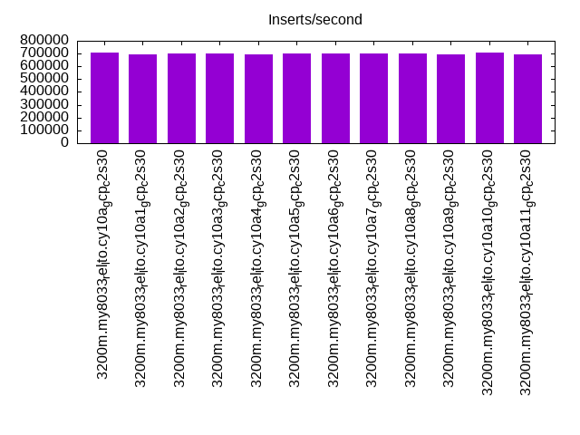
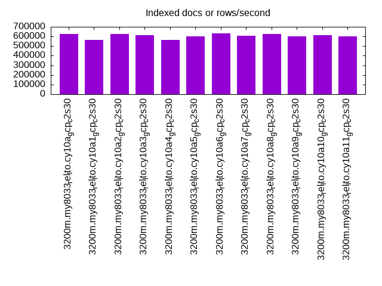
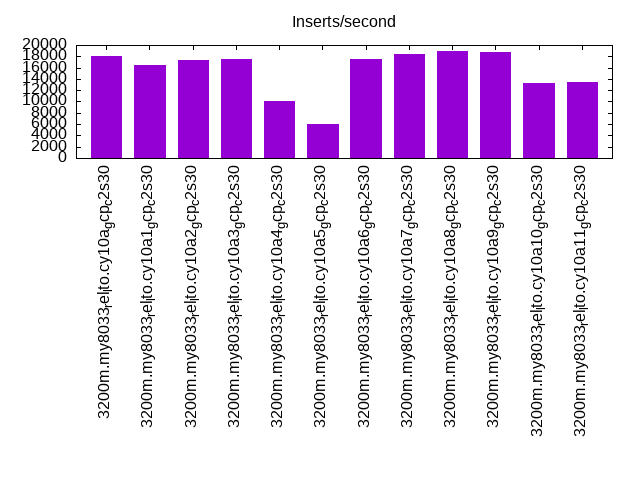
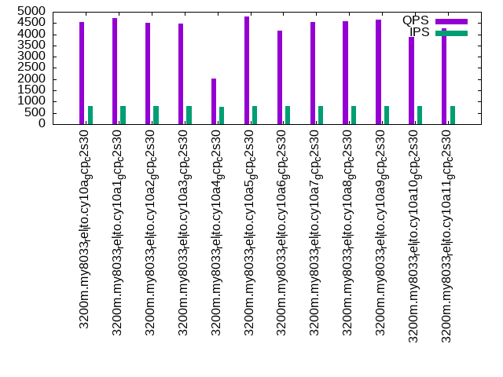
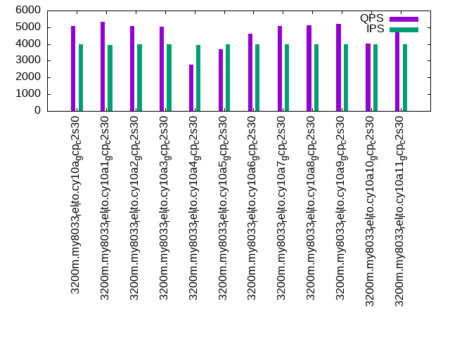
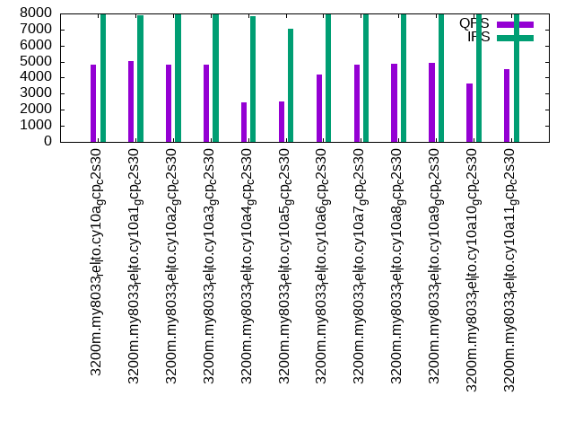

This is a report for the insert benchmark with 3200M docs and 8 client(s). It is generated by scripts (bash, awk, sed) and Tufte might not be impressed. An overview of the insert benchmark is here and a short update is here. Below, by DBMS, I mean DBMS+version.config. An example is my8020.c10b40 where my means MySQL, 8020 is version 8.0.20 and c10b40 is the name for the configuration file.
The test server is a c2-standard-30 from GCP with 15 cores, hyperthreads disabled, 120G RAM, XFS + SW RAID 0 on 4 NVMe devices (1.5TB). The benchmark was run with 8 client and there were 1 or 3 connections per client (1 for queries or inserts without rate limits, 1+1 for rate limited inserts+deletes). There are 8 tables, client per table. It loads 400M rows per table without secondary indexes, creates secondary indexes, then inserts 10M rows per table with a delete per insert to avoid growing the table. It then does 3 read+write tests for 1800s each that do queries as fast as possible with 100, 500 and then 1000 inserts/second/client concurrent with the queries and 1000 deletes/second to avoid growing the table. The database is larger than memory.
The tested DBMS are:
The numbers are inserts/s for l.i0 and l.i1, indexed docs (or rows) /s for l.x and queries/s for q*.2. The values are the average rate over the entire test for inserts (IPS) and queries (QPS). The range of values for IPS and QPS is split into 3 parts: bottom 25%, middle 50%, top 25%. Values in the bottom 25% have a red background, values in the top 25% have a green background and values in the middle have no color. A gray background is used for values that can be ignored because the DBMS did not sustain the target insert rate. Red backgrounds are not used when the minimum value is within 80% of the max value.
| dbms | l.i0 | l.x | l.i1 | q100.1 | q500.1 | q1000.1 |
|---|---|---|---|---|---|---|
| 3200m.my8033_rel_lto.cy10a_gcp_c2s30 | 709534 | 627225 | 18022 | 4531 | 5084 | 4810 |
| 3200m.my8033_rel_lto.cy10a1_gcp_c2s30 | 694746 | 564890 | 16508 | 4710 | 5326 | 5039 |
| 3200m.my8033_rel_lto.cy10a2_gcp_c2s30 | 700219 | 627348 | 17403 | 4519 | 5057 | 4836 |
| 3200m.my8033_rel_lto.cy10a3_gcp_c2s30 | 699148 | 613516 | 17486 | 4461 | 5038 | 4787 |
| 3200m.my8033_rel_lto.cy10a4_gcp_c2s30 | 690399 | 562704 | 10008 | 2040 | 2750 | 2478 |
| 3200m.my8033_rel_lto.cy10a5_gcp_c2s30 | 703916 | 597814 | 5995 | 4784 | 3700 | 2519 |
| 3200m.my8033_rel_lto.cy10a6_gcp_c2s30 | 701600 | 633182 | 17460 | 4159 | 4625 | 4221 |
| 3200m.my8033_rel_lto.cy10a7_gcp_c2s30 | 698842 | 605163 | 18442 | 4549 | 5066 | 4817 |
| 3200m.my8033_rel_lto.cy10a8_gcp_c2s30 | 700066 | 626243 | 18850 | 4577 | 5100 | 4877 |
| 3200m.my8033_rel_lto.cy10a9_gcp_c2s30 | 696864 | 600619 | 18792 | 4657 | 5196 | 4936 |
| 3200m.my8033_rel_lto.cy10a10_gcp_c2s30 | 705934 | 611173 | 13282 | 3876 | 4014 | 3650 |
| 3200m.my8033_rel_lto.cy10a11_gcp_c2s30 | 695199 | 601296 | 13498 | 4263 | 4903 | 4528 |
This table has relative throughput, throughput for the DBMS relative to the DBMS in the first line, using the absolute throughput from the previous table.
| dbms | l.i0 | l.x | l.i1 | q100.1 | q500.1 | q1000.1 |
|---|---|---|---|---|---|---|
| 3200m.my8033_rel_lto.cy10a_gcp_c2s30 | 1.00 | 1.00 | 1.00 | 1.00 | 1.00 | 1.00 |
| 3200m.my8033_rel_lto.cy10a1_gcp_c2s30 | 0.98 | 0.90 | 0.92 | 1.04 | 1.05 | 1.05 |
| 3200m.my8033_rel_lto.cy10a2_gcp_c2s30 | 0.99 | 1.00 | 0.97 | 1.00 | 0.99 | 1.01 |
| 3200m.my8033_rel_lto.cy10a3_gcp_c2s30 | 0.99 | 0.98 | 0.97 | 0.98 | 0.99 | 1.00 |
| 3200m.my8033_rel_lto.cy10a4_gcp_c2s30 | 0.97 | 0.90 | 0.56 | 0.45 | 0.54 | 0.52 |
| 3200m.my8033_rel_lto.cy10a5_gcp_c2s30 | 0.99 | 0.95 | 0.33 | 1.06 | 0.73 | 0.52 |
| 3200m.my8033_rel_lto.cy10a6_gcp_c2s30 | 0.99 | 1.01 | 0.97 | 0.92 | 0.91 | 0.88 |
| 3200m.my8033_rel_lto.cy10a7_gcp_c2s30 | 0.98 | 0.96 | 1.02 | 1.00 | 1.00 | 1.00 |
| 3200m.my8033_rel_lto.cy10a8_gcp_c2s30 | 0.99 | 1.00 | 1.05 | 1.01 | 1.00 | 1.01 |
| 3200m.my8033_rel_lto.cy10a9_gcp_c2s30 | 0.98 | 0.96 | 1.04 | 1.03 | 1.02 | 1.03 |
| 3200m.my8033_rel_lto.cy10a10_gcp_c2s30 | 0.99 | 0.97 | 0.74 | 0.86 | 0.79 | 0.76 |
| 3200m.my8033_rel_lto.cy10a11_gcp_c2s30 | 0.98 | 0.96 | 0.75 | 0.94 | 0.96 | 0.94 |
This lists the average rate of inserts/s for the tests that do inserts concurrent with queries. For such tests the query rate is listed in the table above. The read+write tests are setup so that the insert rate should match the target rate every second. Cells that are not at least 95% of the target have a red background to indicate a failure to satisfy the target.
| dbms | q100.1 | q500.1 | q1000.1 |
|---|---|---|---|
| my8033_rel_lto.cy10a_gcp_c2s30 | 791 | 3971 | 7938 |
| my8033_rel_lto.cy10a1_gcp_c2s30 | 790 | 3960 | 7916 |
| my8033_rel_lto.cy10a2_gcp_c2s30 | 791 | 3971 | 7938 |
| my8033_rel_lto.cy10a3_gcp_c2s30 | 790 | 3971 | 7938 |
| my8033_rel_lto.cy10a4_gcp_c2s30 | 780 | 3943 | 7860 |
| my8033_rel_lto.cy10a5_gcp_c2s30 | 789 | 3969 | 7028 |
| my8033_rel_lto.cy10a6_gcp_c2s30 | 790 | 3971 | 7938 |
| my8033_rel_lto.cy10a7_gcp_c2s30 | 791 | 3971 | 7938 |
| my8033_rel_lto.cy10a8_gcp_c2s30 | 791 | 3971 | 7943 |
| my8033_rel_lto.cy10a9_gcp_c2s30 | 792 | 3971 | 7938 |
| my8033_rel_lto.cy10a10_gcp_c2s30 | 792 | 3974 | 7943 |
| my8033_rel_lto.cy10a11_gcp_c2s30 | 792 | 3971 | 7943 |
| target | 800 | 4000 | 8000 |
l.i0: load without secondary indexes. Graphs for performance per 1-second interval are here.
Average throughput:
Insert response time histogram: each cell has the percentage of responses that take <= the time in the header and max is the max response time in seconds. For the max column values in the top 25% of the range have a red background and in the bottom 25% of the range have a green background. The red background is not used when the min value is within 80% of the max value.
| dbms | 256us | 1ms | 4ms | 16ms | 64ms | 256ms | 1s | 4s | 16s | gt | max |
|---|---|---|---|---|---|---|---|---|---|---|---|
| my8033_rel_lto.cy10a_gcp_c2s30 | 10.483 | 89.424 | 0.062 | 0.017 | 0.014 | 0.001 | 0.311 | ||||
| my8033_rel_lto.cy10a1_gcp_c2s30 | 7.262 | 92.645 | 0.059 | 0.019 | 0.015 | nonzero | 0.287 | ||||
| my8033_rel_lto.cy10a2_gcp_c2s30 | 5.390 | 94.512 | 0.065 | 0.019 | 0.014 | 0.001 | 0.310 | ||||
| my8033_rel_lto.cy10a3_gcp_c2s30 | 5.305 | 94.599 | 0.062 | 0.018 | 0.014 | 0.001 | 0.312 | ||||
| my8033_rel_lto.cy10a4_gcp_c2s30 | 6.250 | 93.501 | 0.217 | 0.018 | 0.015 | 0.245 | |||||
| my8033_rel_lto.cy10a5_gcp_c2s30 | 7.166 | 92.739 | 0.061 | 0.018 | 0.014 | nonzero | 0.300 | ||||
| my8033_rel_lto.cy10a6_gcp_c2s30 | 5.720 | 94.184 | 0.063 | 0.018 | 0.014 | 0.001 | 0.299 | ||||
| my8033_rel_lto.cy10a7_gcp_c2s30 | 6.008 | 93.897 | 0.063 | 0.018 | 0.014 | 0.001 | 0.299 | ||||
| my8033_rel_lto.cy10a8_gcp_c2s30 | 5.680 | 94.222 | 0.065 | 0.018 | 0.014 | 0.001 | 0.300 | ||||
| my8033_rel_lto.cy10a9_gcp_c2s30 | 4.559 | 95.348 | 0.060 | 0.018 | 0.014 | 0.001 | 0.302 | ||||
| my8033_rel_lto.cy10a10_gcp_c2s30 | 9.509 | 90.377 | 0.082 | 0.017 | 0.014 | 0.001 | 0.311 | ||||
| my8033_rel_lto.cy10a11_gcp_c2s30 | 4.639 | 95.240 | 0.071 | 0.035 | 0.014 | 0.001 | 0.296 |
Performance metrics for the DBMS listed above. Some are normalized by throughput, others are not. Legend for results is here.
ips qps rps rmbps wps wmbps rpq rkbpq wpi wkbpi csps cpups cspq cpupq dbgb1 dbgb2 rss maxop p50 p99 tag 709534 0 0 0.0 3673.1 202.5 0.000 0.000 0.005 0.292 180663 76.9 0.255 16 209.7 338.3 86.9 0.311 91301 69824 3200m.my8033_rel_lto.cy10a_gcp_c2s30 694746 0 0 0.0 3604.1 198.6 0.000 0.000 0.005 0.293 165564 77.0 0.238 17 209.7 338.3 86.9 0.287 88803 69925 3200m.my8033_rel_lto.cy10a1_gcp_c2s30 700219 0 0 0.0 3681.4 201.0 0.000 0.000 0.005 0.294 170799 76.8 0.244 16 209.7 338.3 86.9 0.310 90001 69746 3200m.my8033_rel_lto.cy10a2_gcp_c2s30 699148 0 0 0.0 3680.6 201.1 0.000 0.000 0.005 0.295 162641 76.7 0.233 16 209.7 338.3 86.9 0.312 90003 69524 3200m.my8033_rel_lto.cy10a3_gcp_c2s30 690399 0 0 0.0 1543.5 187.8 0.000 0.000 0.002 0.279 170999 76.9 0.248 17 209.7 338.3 86.9 0.245 88348 70455 3200m.my8033_rel_lto.cy10a4_gcp_c2s30 703916 0 0 0.0 3647.0 200.7 0.000 0.000 0.005 0.292 177965 76.9 0.253 16 209.7 338.3 86.9 0.300 90202 70423 3200m.my8033_rel_lto.cy10a5_gcp_c2s30 701600 0 0 0.0 3635.8 200.7 0.000 0.000 0.005 0.293 170046 76.9 0.242 16 209.7 338.3 86.9 0.299 89702 69125 3200m.my8033_rel_lto.cy10a6_gcp_c2s30 698842 0 0 0.0 3627.7 199.9 0.000 0.000 0.005 0.293 165302 76.7 0.237 16 209.7 338.3 86.7 0.299 89981 69349 3200m.my8033_rel_lto.cy10a7_gcp_c2s30 700066 0 0 0.0 3630.1 200.0 0.000 0.000 0.005 0.293 167180 76.8 0.239 16 209.7 338.3 86.5 0.300 89602 69349 3200m.my8033_rel_lto.cy10a8_gcp_c2s30 696864 0 0 0.0 3617.8 199.5 0.000 0.000 0.005 0.293 161357 76.7 0.232 17 209.7 338.3 86.0 0.302 89402 69024 3200m.my8033_rel_lto.cy10a9_gcp_c2s30 705934 0 0 0.0 3654.1 201.3 0.000 0.000 0.005 0.292 177876 76.9 0.252 16 209.7 338.3 86.9 0.311 90103 68825 3200m.my8033_rel_lto.cy10a10_gcp_c2s30 695199 0 0 0.0 3784.6 205.1 0.000 0.000 0.005 0.302 159430 76.5 0.229 17 209.7 226.3 86.9 0.296 89203 69048 3200m.my8033_rel_lto.cy10a11_gcp_c2s30
l.x: create secondary indexes.
Average throughput:
Performance metrics for the DBMS listed above. Some are normalized by throughput, others are not. Legend for results is here.
ips qps rps rmbps wps wmbps rpq rkbpq wpi wkbpi csps cpups cspq cpupq dbgb1 dbgb2 rss maxop p50 p99 tag 627225 0 7639 675.9 13252.9 808.9 0.012 1.104 0.021 1.321 58138 57.4 0.093 14 468.9 597.5 86.9 0.005 NA NA 3200m.my8033_rel_lto.cy10a_gcp_c2s30 564890 0 6858 581.3 11886.1 732.0 0.012 1.054 0.021 1.327 50826 55.9 0.090 15 468.9 597.5 86.9 0.005 NA NA 3200m.my8033_rel_lto.cy10a1_gcp_c2s30 627348 0 7576 645.0 13069.0 807.7 0.012 1.053 0.021 1.318 48505 59.1 0.077 14 468.9 597.5 86.9 0.006 NA NA 3200m.my8033_rel_lto.cy10a2_gcp_c2s30 613516 0 7469 644.3 12795.3 787.5 0.012 1.075 0.021 1.314 45594 56.1 0.074 14 468.9 597.5 86.9 0.004 NA NA 3200m.my8033_rel_lto.cy10a3_gcp_c2s30 562704 0 5284 594.3 11219.9 716.6 0.009 1.081 0.020 1.304 92667 55.0 0.165 15 468.9 597.5 86.9 0.006 NA NA 3200m.my8033_rel_lto.cy10a4_gcp_c2s30 597814 0 7205 619.3 12546.9 781.9 0.012 1.061 0.021 1.339 46647 56.6 0.078 14 468.9 597.5 86.9 0.004 NA NA 3200m.my8033_rel_lto.cy10a5_gcp_c2s30 633182 0 7723 689.9 13357.5 818.8 0.012 1.116 0.021 1.324 53308 55.8 0.084 13 468.9 597.5 86.9 0.003 NA NA 3200m.my8033_rel_lto.cy10a6_gcp_c2s30 605163 0 7382 646.6 12772.3 776.1 0.012 1.094 0.021 1.313 54989 55.4 0.091 14 468.9 597.5 86.9 0.004 NA NA 3200m.my8033_rel_lto.cy10a7_gcp_c2s30 626243 0 7630 679.8 13306.0 806.0 0.012 1.112 0.021 1.318 56268 55.8 0.090 13 468.9 597.5 86.9 0.005 NA NA 3200m.my8033_rel_lto.cy10a8_gcp_c2s30 600619 0 7321 640.1 12640.0 777.6 0.012 1.091 0.021 1.326 53463 55.3 0.089 14 468.9 597.5 86.9 0.003 NA NA 3200m.my8033_rel_lto.cy10a9_gcp_c2s30 611173 0 7439 656.3 12573.3 787.0 0.012 1.100 0.021 1.319 52481 55.3 0.086 14 468.9 597.5 86.9 0.004 NA NA 3200m.my8033_rel_lto.cy10a10_gcp_c2s30 601296 0 7288 639.5 12514.4 775.0 0.012 1.089 0.021 1.320 49263 55.3 0.082 14 468.9 485.5 86.9 0.006 NA NA 3200m.my8033_rel_lto.cy10a11_gcp_c2s30
l.i1: continue load after secondary indexes created. Graphs for performance per 1-second interval are here.
Average throughput:
Insert response time histogram: each cell has the percentage of responses that take <= the time in the header and max is the max response time in seconds. For the max column values in the top 25% of the range have a red background and in the bottom 25% of the range have a green background. The red background is not used when the min value is within 80% of the max value.
| dbms | 256us | 1ms | 4ms | 16ms | 64ms | 256ms | 1s | 4s | 16s | gt | max |
|---|---|---|---|---|---|---|---|---|---|---|---|
| my8033_rel_lto.cy10a_gcp_c2s30 | 0.771 | 68.508 | 22.167 | 8.553 | 0.002 | 0.282 | |||||
| my8033_rel_lto.cy10a1_gcp_c2s30 | 1.170 | 65.501 | 23.621 | 9.702 | 0.007 | 0.314 | |||||
| my8033_rel_lto.cy10a2_gcp_c2s30 | 1.034 | 67.410 | 22.600 | 8.940 | 0.016 | 0.367 | |||||
| my8033_rel_lto.cy10a3_gcp_c2s30 | 0.667 | 67.575 | 22.869 | 8.869 | 0.020 | 0.369 | |||||
| my8033_rel_lto.cy10a4_gcp_c2s30 | 0.627 | 55.521 | 28.220 | 13.098 | 2.534 | 0.578 | |||||
| my8033_rel_lto.cy10a5_gcp_c2s30 | 57.714 | 42.285 | nonzero | 0.283 | |||||||
| my8033_rel_lto.cy10a6_gcp_c2s30 | 0.386 | 66.813 | 24.123 | 8.677 | 0.001 | 0.287 | |||||
| my8033_rel_lto.cy10a7_gcp_c2s30 | 1.129 | 69.025 | 21.495 | 8.348 | 0.003 | 0.306 | |||||
| my8033_rel_lto.cy10a8_gcp_c2s30 | 1.259 | 69.914 | 20.596 | 8.228 | 0.003 | 0.327 | |||||
| my8033_rel_lto.cy10a9_gcp_c2s30 | 1.258 | 69.841 | 20.591 | 8.305 | 0.005 | 0.303 | |||||
| my8033_rel_lto.cy10a10_gcp_c2s30 | 0.021 | 39.392 | 49.505 | 11.045 | 0.036 | 0.369 | |||||
| my8033_rel_lto.cy10a11_gcp_c2s30 | 0.150 | 66.724 | 25.293 | 6.919 | 0.483 | 0.431 | 2.167 |
Delete response time histogram: each cell has the percentage of responses that take <= the time in the header and max is the max response time in seconds. For the max column values in the top 25% of the range have a red background and in the bottom 25% of the range have a green background. The red background is not used when the min value is within 80% of the max value.
| dbms | 256us | 1ms | 4ms | 16ms | 64ms | 256ms | 1s | 4s | 16s | gt | max |
|---|---|---|---|---|---|---|---|---|---|---|---|
| my8033_rel_lto.cy10a_gcp_c2s30 | 21.338 | 74.691 | 3.727 | 0.244 | 0.256 | ||||||
| my8033_rel_lto.cy10a1_gcp_c2s30 | 22.691 | 72.675 | 4.324 | 0.303 | 0.007 | 0.300 | |||||
| my8033_rel_lto.cy10a2_gcp_c2s30 | 21.598 | 74.176 | 3.975 | 0.237 | 0.014 | 0.379 | |||||
| my8033_rel_lto.cy10a3_gcp_c2s30 | 20.620 | 74.969 | 4.149 | 0.246 | 0.016 | 0.375 | |||||
| my8033_rel_lto.cy10a4_gcp_c2s30 | 18.175 | 71.980 | 9.756 | 0.088 | 0.149 | ||||||
| my8033_rel_lto.cy10a5_gcp_c2s30 | nonzero | 85.604 | 14.396 | 0.142 | |||||||
| my8033_rel_lto.cy10a6_gcp_c2s30 | 19.840 | 75.174 | 4.712 | 0.273 | 0.250 | ||||||
| my8033_rel_lto.cy10a7_gcp_c2s30 | 21.230 | 74.854 | 3.684 | 0.232 | nonzero | 0.261 | |||||
| my8033_rel_lto.cy10a8_gcp_c2s30 | 21.638 | 74.655 | 3.487 | 0.221 | nonzero | 0.266 | |||||
| my8033_rel_lto.cy10a9_gcp_c2s30 | 21.729 | 74.535 | 3.501 | 0.235 | nonzero | 0.256 | |||||
| my8033_rel_lto.cy10a10_gcp_c2s30 | 21.278 | 74.621 | 3.772 | 0.329 | 0.203 | ||||||
| my8033_rel_lto.cy10a11_gcp_c2s30 | 18.580 | 74.649 | 6.387 | 0.153 | 0.136 | 0.095 | 1.719 |
Performance metrics for the DBMS listed above. Some are normalized by throughput, others are not. Legend for results is here.
ips qps rps rmbps wps wmbps rpq rkbpq wpi wkbpi csps cpups cspq cpupq dbgb1 dbgb2 rss maxop p50 p99 tag 18022 0 16749 261.7 33558.3 771.5 0.929 14.870 1.862 43.834 181557 42.0 10.074 350 651.3 816.1 86.9 0.282 1398 300 3200m.my8033_rel_lto.cy10a_gcp_c2s30 16508 0 14974 234.0 30618.4 710.6 0.907 14.512 1.855 44.080 192971 39.3 11.689 357 651.5 816.7 86.9 0.314 1099 300 3200m.my8033_rel_lto.cy10a1_gcp_c2s30 17403 0 16638 260.0 35142.2 791.2 0.956 15.297 2.019 46.558 182094 41.3 10.464 356 651.4 813.6 86.9 0.367 1249 300 3200m.my8033_rel_lto.cy10a2_gcp_c2s30 17486 0 16622 259.7 35129.1 792.3 0.951 15.209 2.009 46.399 182927 41.4 10.461 355 651.5 813.8 86.9 0.369 1349 300 3200m.my8033_rel_lto.cy10a3_gcp_c2s30 10008 0 8677 241.2 18330.1 428.9 0.867 24.675 1.832 43.882 272121 28.8 27.192 432 651.5 819.8 86.9 0.578 400 150 3200m.my8033_rel_lto.cy10a4_gcp_c2s30 5995 0 26091 407.7 48986.9 936.0 4.352 69.632 8.171 159.868 182593 17.9 30.456 448 650.7 784.4 86.9 0.283 799 350 3200m.my8033_rel_lto.cy10a5_gcp_c2s30 17460 0 16323 255.0 33827.1 776.7 0.935 14.958 1.937 45.551 181597 42.6 10.401 366 651.3 816.5 86.9 0.287 1498 300 3200m.my8033_rel_lto.cy10a6_gcp_c2s30 18442 0 16975 265.2 32925.4 765.9 0.920 14.728 1.785 42.528 182140 42.1 9.877 342 651.3 816.3 86.9 0.306 1398 300 3200m.my8033_rel_lto.cy10a7_gcp_c2s30 18850 0 17233 269.3 32610.2 761.8 0.914 14.627 1.730 41.384 182990 42.0 9.708 334 651.3 816.7 86.9 0.327 1399 300 3200m.my8033_rel_lto.cy10a8_gcp_c2s30 18792 0 17253 269.6 32349.3 755.4 0.918 14.689 1.721 41.159 182313 42.0 9.701 335 651.3 816.7 86.9 0.303 1398 300 3200m.my8033_rel_lto.cy10a9_gcp_c2s30 13282 0 23399 365.6 41511.1 976.1 1.762 28.187 3.125 75.250 219740 43.8 16.544 495 646.1 802.1 86.9 0.369 1349 350 3200m.my8033_rel_lto.cy10a10_gcp_c2s30 13498 0 12583 196.6 28760.8 693.4 0.932 14.916 2.131 52.602 150265 33.7 11.133 375 651.4 705.6 86.9 2.167 849 0 3200m.my8033_rel_lto.cy10a11_gcp_c2s30
q100.1: range queries with 100 insert/s per client. Graphs for performance per 1-second interval are here.
Average throughput:
Query response time histogram: each cell has the percentage of responses that take <= the time in the header and max is the max response time in seconds. For max values in the top 25% of the range have a red background and in the bottom 25% of the range have a green background. The red background is not used when the min value is within 80% of the max value.
| dbms | 256us | 1ms | 4ms | 16ms | 64ms | 256ms | 1s | 4s | 16s | gt | max |
|---|---|---|---|---|---|---|---|---|---|---|---|
| my8033_rel_lto.cy10a_gcp_c2s30 | 37.886 | 4.515 | 50.453 | 7.071 | 0.075 | 0.001 | 0.145 | ||||
| my8033_rel_lto.cy10a1_gcp_c2s30 | 37.597 | 5.137 | 51.142 | 6.047 | 0.071 | 0.006 | nonzero | 0.379 | |||
| my8033_rel_lto.cy10a2_gcp_c2s30 | 37.459 | 4.965 | 50.716 | 6.758 | 0.101 | 0.001 | 0.176 | ||||
| my8033_rel_lto.cy10a3_gcp_c2s30 | 36.998 | 5.255 | 50.612 | 7.028 | 0.106 | 0.002 | 0.172 | ||||
| my8033_rel_lto.cy10a4_gcp_c2s30 | 34.040 | 7.715 | 28.863 | 25.147 | 4.112 | 0.124 | 0.230 | ||||
| my8033_rel_lto.cy10a5_gcp_c2s30 | 37.237 | 5.499 | 52.548 | 4.715 | 0.001 | 0.058 | |||||
| my8033_rel_lto.cy10a6_gcp_c2s30 | 37.493 | 4.787 | 47.563 | 10.063 | 0.093 | 0.001 | 0.193 | ||||
| my8033_rel_lto.cy10a7_gcp_c2s30 | 37.418 | 4.913 | 50.813 | 6.782 | 0.073 | nonzero | 0.135 | ||||
| my8033_rel_lto.cy10a8_gcp_c2s30 | 37.503 | 4.803 | 51.067 | 6.559 | 0.067 | 0.001 | 0.144 | ||||
| my8033_rel_lto.cy10a9_gcp_c2s30 | 37.092 | 5.164 | 51.904 | 5.776 | 0.063 | 0.001 | 0.160 | ||||
| my8033_rel_lto.cy10a10_gcp_c2s30 | 29.059 | 10.558 | 49.418 | 10.910 | 0.054 | nonzero | 0.074 | ||||
| my8033_rel_lto.cy10a11_gcp_c2s30 | 37.022 | 5.141 | 48.617 | 9.103 | 0.116 | 0.001 | 0.135 |
Insert response time histogram: each cell has the percentage of responses that take <= the time in the header and max is the max response time in seconds. For max values in the top 25% of the range have a red background and in the bottom 25% of the range have a green background. The red background is not used when the min value is within 80% of the max value.
| dbms | 256us | 1ms | 4ms | 16ms | 64ms | 256ms | 1s | 4s | 16s | gt | max |
|---|---|---|---|---|---|---|---|---|---|---|---|
| my8033_rel_lto.cy10a_gcp_c2s30 | 23.830 | 73.517 | 2.462 | 0.191 | 0.184 | ||||||
| my8033_rel_lto.cy10a1_gcp_c2s30 | 21.830 | 76.014 | 1.896 | 0.260 | 0.217 | ||||||
| my8033_rel_lto.cy10a2_gcp_c2s30 | 24.233 | 71.809 | 3.559 | 0.392 | 0.007 | 0.314 | |||||
| my8033_rel_lto.cy10a3_gcp_c2s30 | 24.017 | 71.358 | 3.979 | 0.639 | 0.007 | 0.310 | |||||
| my8033_rel_lto.cy10a4_gcp_c2s30 | 2.611 | 61.035 | 33.201 | 3.153 | 0.225 | ||||||
| my8033_rel_lto.cy10a5_gcp_c2s30 | 99.854 | 0.146 | 0.085 | ||||||||
| my8033_rel_lto.cy10a6_gcp_c2s30 | 18.531 | 78.264 | 2.972 | 0.233 | 0.161 | ||||||
| my8033_rel_lto.cy10a7_gcp_c2s30 | 22.274 | 75.059 | 2.420 | 0.247 | 0.211 | ||||||
| my8033_rel_lto.cy10a8_gcp_c2s30 | 20.958 | 76.604 | 2.122 | 0.316 | 0.245 | ||||||
| my8033_rel_lto.cy10a9_gcp_c2s30 | 20.833 | 76.750 | 2.122 | 0.295 | 0.215 | ||||||
| my8033_rel_lto.cy10a10_gcp_c2s30 | 0.212 | 89.503 | 10.149 | 0.135 | 0.120 | ||||||
| my8033_rel_lto.cy10a11_gcp_c2s30 | 16.979 | 78.507 | 3.951 | 0.556 | 0.007 | 0.260 |
Delete response time histogram: each cell has the percentage of responses that take <= the time in the header and max is the max response time in seconds. For max values in the top 25% of the range have a red background and in the bottom 25% of the range have a green background. The red background is not used when the min value is within 80% of the max value.
| dbms | 256us | 1ms | 4ms | 16ms | 64ms | 256ms | 1s | 4s | 16s | gt | max |
|---|---|---|---|---|---|---|---|---|---|---|---|
| my8033_rel_lto.cy10a_gcp_c2s30 | 32.316 | 65.316 | 2.198 | 0.170 | 0.185 | ||||||
| my8033_rel_lto.cy10a1_gcp_c2s30 | 28.736 | 69.208 | 1.812 | 0.243 | 0.217 | ||||||
| my8033_rel_lto.cy10a2_gcp_c2s30 | 32.184 | 64.215 | 3.240 | 0.354 | 0.007 | 0.313 | |||||
| my8033_rel_lto.cy10a3_gcp_c2s30 | 31.181 | 64.479 | 3.753 | 0.580 | 0.007 | 0.306 | |||||
| my8033_rel_lto.cy10a4_gcp_c2s30 | 3.559 | 61.014 | 32.510 | 2.917 | 0.240 | ||||||
| my8033_rel_lto.cy10a5_gcp_c2s30 | 99.878 | 0.122 | 0.087 | ||||||||
| my8033_rel_lto.cy10a6_gcp_c2s30 | 26.892 | 70.299 | 2.611 | 0.198 | 0.154 | ||||||
| my8033_rel_lto.cy10a7_gcp_c2s30 | 30.174 | 67.243 | 2.347 | 0.236 | 0.212 | ||||||
| my8033_rel_lto.cy10a8_gcp_c2s30 | 29.580 | 68.146 | 1.976 | 0.299 | 0.248 | ||||||
| my8033_rel_lto.cy10a9_gcp_c2s30 | 29.271 | 68.455 | 2.010 | 0.264 | 0.213 | ||||||
| my8033_rel_lto.cy10a10_gcp_c2s30 | 12.458 | 85.406 | 2.021 | 0.115 | 0.117 | ||||||
| my8033_rel_lto.cy10a11_gcp_c2s30 | 24.858 | 71.135 | 3.490 | 0.514 | 0.003 | 0.259 |
Performance metrics for the DBMS listed above. Some are normalized by throughput, others are not. Legend for results is here.
ips qps rps rmbps wps wmbps rpq rkbpq wpi wkbpi csps cpups cspq cpupq dbgb1 dbgb2 rss maxop p50 p99 tag 791 4531 33074 516.8 26522.5 585.9 7.299 116.788 33.543 758.829 172319 25.9 38.029 857 651.3 816.1 86.9 0.145 592 208 3200m.my8033_rel_lto.cy10a_gcp_c2s30 790 4710 32562 508.8 24146.8 549.6 6.913 110.612 30.569 712.461 186410 25.7 39.577 818 651.5 816.7 86.9 0.379 623 224 3200m.my8033_rel_lto.cy10a1_gcp_c2s30 791 4519 33246 519.5 26668.1 587.6 7.357 117.712 33.727 760.921 174092 26.6 38.524 883 651.4 813.6 86.9 0.176 607 192 3200m.my8033_rel_lto.cy10a2_gcp_c2s30 790 4461 33374 521.5 26731.1 599.4 7.481 119.699 33.824 776.696 175773 27.0 39.402 908 651.5 813.9 86.9 0.172 591 192 3200m.my8033_rel_lto.cy10a3_gcp_c2s30 780 2040 12949 838.2 13196.8 304.8 6.348 420.825 16.910 399.954 223375 22.5 109.514 1655 651.5 819.8 86.9 0.230 272 48 3200m.my8033_rel_lto.cy10a4_gcp_c2s30 789 4784 37491 585.8 26903.4 580.9 7.837 125.387 34.081 753.595 175237 21.5 36.630 674 650.7 784.5 86.9 0.058 607 256 3200m.my8033_rel_lto.cy10a5_gcp_c2s30 790 4159 30362 474.4 28865.2 622.6 7.301 116.809 36.524 806.720 170834 25.1 41.078 905 651.3 816.5 86.9 0.193 544 208 3200m.my8033_rel_lto.cy10a6_gcp_c2s30 791 4549 33164 518.2 26187.4 585.0 7.291 116.656 33.119 757.651 172665 26.2 37.959 864 651.3 816.3 86.9 0.135 607 240 3200m.my8033_rel_lto.cy10a7_gcp_c2s30 791 4577 33418 522.2 26252.9 587.7 7.302 116.825 33.181 760.652 173475 26.4 37.903 865 651.3 816.7 86.9 0.144 607 256 3200m.my8033_rel_lto.cy10a8_gcp_c2s30 792 4657 34199 534.4 25831.1 594.6 7.343 117.488 32.615 768.744 176899 26.9 37.983 866 651.3 816.7 86.9 0.160 608 256 3200m.my8033_rel_lto.cy10a9_gcp_c2s30 792 3876 39416 615.9 38585.7 856.0 10.170 162.724 48.689 1106.014 218242 32.5 56.312 1258 646.1 802.1 86.9 0.074 511 256 3200m.my8033_rel_lto.cy10a10_gcp_c2s30 792 4263 31460 491.6 28513.7 620.6 7.379 118.067 36.020 802.813 172836 26.2 40.540 922 651.4 705.7 86.9 0.135 575 208 3200m.my8033_rel_lto.cy10a11_gcp_c2s30
q500.1: range queries with 500 insert/s per client. Graphs for performance per 1-second interval are here.
Average throughput:
Query response time histogram: each cell has the percentage of responses that take <= the time in the header and max is the max response time in seconds. For max values in the top 25% of the range have a red background and in the bottom 25% of the range have a green background. The red background is not used when the min value is within 80% of the max value.
| dbms | 256us | 1ms | 4ms | 16ms | 64ms | 256ms | 1s | 4s | 16s | gt | max |
|---|---|---|---|---|---|---|---|---|---|---|---|
| my8033_rel_lto.cy10a_gcp_c2s30 | 38.024 | 5.001 | 53.779 | 3.194 | 0.002 | 0.063 | |||||
| my8033_rel_lto.cy10a1_gcp_c2s30 | 37.634 | 5.795 | 54.442 | 2.087 | 0.040 | 0.001 | nonzero | nonzero | 1.714 | ||
| my8033_rel_lto.cy10a2_gcp_c2s30 | 37.766 | 5.442 | 53.391 | 3.398 | 0.004 | 0.058 | |||||
| my8033_rel_lto.cy10a3_gcp_c2s30 | 37.369 | 5.703 | 53.581 | 3.343 | 0.004 | 0.059 | |||||
| my8033_rel_lto.cy10a4_gcp_c2s30 | 35.570 | 8.301 | 33.817 | 20.323 | 1.974 | 0.015 | 0.196 | ||||
| my8033_rel_lto.cy10a5_gcp_c2s30 | 34.998 | 5.557 | 44.859 | 14.578 | 0.008 | nonzero | 0.087 | ||||
| my8033_rel_lto.cy10a6_gcp_c2s30 | 37.816 | 5.153 | 51.102 | 5.927 | 0.002 | 0.061 | |||||
| my8033_rel_lto.cy10a7_gcp_c2s30 | 37.262 | 5.650 | 54.083 | 3.003 | 0.002 | 0.057 | |||||
| my8033_rel_lto.cy10a8_gcp_c2s30 | 37.520 | 5.368 | 54.270 | 2.841 | 0.002 | 0.054 | |||||
| my8033_rel_lto.cy10a9_gcp_c2s30 | 36.997 | 5.864 | 54.755 | 2.382 | 0.002 | 0.052 | |||||
| my8033_rel_lto.cy10a10_gcp_c2s30 | 28.197 | 11.452 | 51.487 | 8.838 | 0.026 | nonzero | 0.076 | ||||
| my8033_rel_lto.cy10a11_gcp_c2s30 | 37.520 | 5.435 | 52.951 | 4.091 | 0.003 | nonzero | 0.064 |
Insert response time histogram: each cell has the percentage of responses that take <= the time in the header and max is the max response time in seconds. For max values in the top 25% of the range have a red background and in the bottom 25% of the range have a green background. The red background is not used when the min value is within 80% of the max value.
| dbms | 256us | 1ms | 4ms | 16ms | 64ms | 256ms | 1s | 4s | 16s | gt | max |
|---|---|---|---|---|---|---|---|---|---|---|---|
| my8033_rel_lto.cy10a_gcp_c2s30 | 49.169 | 50.517 | 0.314 | 0.052 | |||||||
| my8033_rel_lto.cy10a1_gcp_c2s30 | 51.232 | 48.139 | 0.608 | 0.020 | 0.001 | 0.299 | |||||
| my8033_rel_lto.cy10a2_gcp_c2s30 | 52.021 | 47.560 | 0.419 | 0.048 | |||||||
| my8033_rel_lto.cy10a3_gcp_c2s30 | 52.828 | 46.728 | 0.444 | 0.059 | |||||||
| my8033_rel_lto.cy10a4_gcp_c2s30 | 14.756 | 74.886 | 10.138 | 0.220 | 0.191 | ||||||
| my8033_rel_lto.cy10a5_gcp_c2s30 | 99.697 | 0.303 | 0.090 | ||||||||
| my8033_rel_lto.cy10a6_gcp_c2s30 | 46.358 | 53.287 | 0.355 | 0.056 | |||||||
| my8033_rel_lto.cy10a7_gcp_c2s30 | 45.353 | 54.299 | 0.349 | 0.063 | |||||||
| my8033_rel_lto.cy10a8_gcp_c2s30 | 47.560 | 52.161 | 0.279 | 0.045 | |||||||
| my8033_rel_lto.cy10a9_gcp_c2s30 | 47.294 | 52.367 | 0.340 | 0.057 | |||||||
| my8033_rel_lto.cy10a10_gcp_c2s30 | 0.055 | 77.155 | 22.790 | 0.001 | 0.066 | ||||||
| my8033_rel_lto.cy10a11_gcp_c2s30 | 44.619 | 54.981 | 0.401 | 0.047 |
Delete response time histogram: each cell has the percentage of responses that take <= the time in the header and max is the max response time in seconds. For max values in the top 25% of the range have a red background and in the bottom 25% of the range have a green background. The red background is not used when the min value is within 80% of the max value.
| dbms | 256us | 1ms | 4ms | 16ms | 64ms | 256ms | 1s | 4s | 16s | gt | max |
|---|---|---|---|---|---|---|---|---|---|---|---|
| my8033_rel_lto.cy10a_gcp_c2s30 | 65.385 | 34.353 | 0.261 | 0.046 | |||||||
| my8033_rel_lto.cy10a1_gcp_c2s30 | 61.357 | 38.076 | 0.546 | 0.021 | 0.209 | ||||||
| my8033_rel_lto.cy10a2_gcp_c2s30 | 65.772 | 33.865 | 0.363 | 0.049 | |||||||
| my8033_rel_lto.cy10a3_gcp_c2s30 | 65.666 | 33.949 | 0.385 | 0.049 | |||||||
| my8033_rel_lto.cy10a4_gcp_c2s30 | 19.844 | 71.022 | 8.892 | 0.242 | 0.194 | ||||||
| my8033_rel_lto.cy10a5_gcp_c2s30 | 99.783 | 0.217 | 0.088 | ||||||||
| my8033_rel_lto.cy10a6_gcp_c2s30 | 62.708 | 36.974 | 0.319 | 0.042 | |||||||
| my8033_rel_lto.cy10a7_gcp_c2s30 | 61.622 | 38.091 | 0.287 | 0.061 | |||||||
| my8033_rel_lto.cy10a8_gcp_c2s30 | 64.652 | 35.113 | 0.235 | 0.041 | |||||||
| my8033_rel_lto.cy10a9_gcp_c2s30 | 63.572 | 36.167 | 0.261 | 0.048 | |||||||
| my8033_rel_lto.cy10a10_gcp_c2s30 | 46.253 | 53.372 | 0.374 | 0.058 | |||||||
| my8033_rel_lto.cy10a11_gcp_c2s30 | 61.269 | 38.401 | 0.329 | 0.045 |
Performance metrics for the DBMS listed above. Some are normalized by throughput, others are not. Legend for results is here.
ips qps rps rmbps wps wmbps rpq rkbpq wpi wkbpi csps cpups cspq cpupq dbgb1 dbgb2 rss maxop p50 p99 tag 3971 5084 35749 558.6 25944.5 578.0 7.032 112.509 6.533 149.035 177339 27.3 34.882 805 651.3 816.2 86.9 0.063 623 543 3200m.my8033_rel_lto.cy10a_gcp_c2s30 3960 5326 35267 551.1 22814.3 534.7 6.621 105.940 5.761 138.260 192268 27.7 36.097 780 651.5 816.9 86.9 1.714 671 575 3200m.my8033_rel_lto.cy10a1_gcp_c2s30 3971 5057 35706 557.9 26426.4 585.3 7.060 112.963 6.654 150.910 178254 27.5 35.246 816 651.4 813.7 86.9 0.058 639 559 3200m.my8033_rel_lto.cy10a2_gcp_c2s30 3971 5038 35852 560.2 26029.2 592.5 7.116 113.853 6.554 152.785 179562 27.9 35.639 831 651.5 814.1 86.9 0.059 623 543 3200m.my8033_rel_lto.cy10a3_gcp_c2s30 3943 2750 15579 955.1 12566.7 287.7 5.666 355.685 3.187 74.723 231199 24.3 84.085 1326 651.7 820.4 86.9 0.196 336 208 3200m.my8033_rel_lto.cy10a4_gcp_c2s30 3969 3700 39048 610.1 38095.9 737.3 10.555 168.873 9.598 190.211 193064 23.0 52.185 933 650.7 784.8 86.9 0.087 463 416 3200m.my8033_rel_lto.cy10a5_gcp_c2s30 3971 4625 32204 503.2 29495.5 633.5 6.964 111.417 7.427 163.348 175029 25.8 37.847 837 651.3 816.7 86.9 0.061 575 511 3200m.my8033_rel_lto.cy10a6_gcp_c2s30 3971 5066 35937 561.5 25932.2 582.0 7.094 113.499 6.530 150.068 178243 27.7 35.183 820 651.3 816.4 86.9 0.057 624 559 3200m.my8033_rel_lto.cy10a7_gcp_c2s30 3971 5100 36159 565.0 25997.1 584.5 7.090 113.434 6.546 150.720 179031 27.6 35.102 812 651.3 816.9 86.9 0.054 639 559 3200m.my8033_rel_lto.cy10a8_gcp_c2s30 3971 5196 36915 576.8 25432.5 593.2 7.104 113.664 6.404 152.966 182828 28.4 35.184 820 651.3 816.8 86.9 0.052 655 559 3200m.my8033_rel_lto.cy10a9_gcp_c2s30 3974 4014 40866 638.5 40680.8 887.7 10.181 162.901 10.238 228.756 227185 34.1 56.601 1274 646.1 801.4 86.9 0.076 496 432 3200m.my8033_rel_lto.cy10a10_gcp_c2s30 3971 4903 34432 538.0 28202.7 616.7 7.023 112.372 7.102 159.024 178037 27.3 36.315 835 651.4 705.8 86.9 0.064 607 527 3200m.my8033_rel_lto.cy10a11_gcp_c2s30
q1000.1: range queries with 1000 insert/s per client. Graphs for performance per 1-second interval are here.
Average throughput:
Query response time histogram: each cell has the percentage of responses that take <= the time in the header and max is the max response time in seconds. For max values in the top 25% of the range have a red background and in the bottom 25% of the range have a green background. The red background is not used when the min value is within 80% of the max value.
| dbms | 256us | 1ms | 4ms | 16ms | 64ms | 256ms | 1s | 4s | 16s | gt | max |
|---|---|---|---|---|---|---|---|---|---|---|---|
| my8033_rel_lto.cy10a_gcp_c2s30 | 36.581 | 5.745 | 53.224 | 4.447 | 0.002 | 0.061 | |||||
| my8033_rel_lto.cy10a1_gcp_c2s30 | 36.561 | 6.209 | 54.044 | 3.146 | 0.039 | 0.001 | nonzero | nonzero | 1.888 | ||
| my8033_rel_lto.cy10a2_gcp_c2s30 | 36.917 | 5.697 | 52.846 | 4.538 | 0.002 | 0.063 | |||||
| my8033_rel_lto.cy10a3_gcp_c2s30 | 36.359 | 6.114 | 52.886 | 4.639 | 0.002 | 0.059 | |||||
| my8033_rel_lto.cy10a4_gcp_c2s30 | 32.310 | 10.518 | 31.920 | 22.555 | 2.684 | 0.013 | 0.212 | ||||
| my8033_rel_lto.cy10a5_gcp_c2s30 | 30.344 | 6.664 | 27.439 | 35.496 | 0.049 | 0.008 | 0.110 | ||||
| my8033_rel_lto.cy10a6_gcp_c2s30 | 36.902 | 5.371 | 48.776 | 8.948 | 0.003 | nonzero | 0.075 | ||||
| my8033_rel_lto.cy10a7_gcp_c2s30 | 36.206 | 6.095 | 53.496 | 4.201 | 0.003 | nonzero | 0.072 | ||||
| my8033_rel_lto.cy10a8_gcp_c2s30 | 36.636 | 5.703 | 53.696 | 3.962 | 0.003 | nonzero | 0.065 | ||||
| my8033_rel_lto.cy10a9_gcp_c2s30 | 35.630 | 6.651 | 54.120 | 3.596 | 0.003 | 0.061 | |||||
| my8033_rel_lto.cy10a10_gcp_c2s30 | 26.169 | 12.764 | 48.135 | 12.851 | 0.081 | nonzero | 0.077 | ||||
| my8033_rel_lto.cy10a11_gcp_c2s30 | 36.152 | 6.144 | 51.121 | 6.579 | 0.004 | nonzero | 0.067 |
Insert response time histogram: each cell has the percentage of responses that take <= the time in the header and max is the max response time in seconds. For max values in the top 25% of the range have a red background and in the bottom 25% of the range have a green background. The red background is not used when the min value is within 80% of the max value.
| dbms | 256us | 1ms | 4ms | 16ms | 64ms | 256ms | 1s | 4s | 16s | gt | max |
|---|---|---|---|---|---|---|---|---|---|---|---|
| my8033_rel_lto.cy10a_gcp_c2s30 | 45.615 | 54.161 | 0.224 | 0.055 | |||||||
| my8033_rel_lto.cy10a1_gcp_c2s30 | 53.443 | 46.108 | 0.439 | 0.010 | nonzero | 0.465 | |||||
| my8033_rel_lto.cy10a2_gcp_c2s30 | 53.230 | 46.648 | 0.123 | 0.042 | |||||||
| my8033_rel_lto.cy10a3_gcp_c2s30 | 55.425 | 44.471 | 0.103 | 0.044 | |||||||
| my8033_rel_lto.cy10a4_gcp_c2s30 | 12.249 | 75.075 | 12.472 | 0.203 | 0.203 | ||||||
| my8033_rel_lto.cy10a5_gcp_c2s30 | 80.451 | 19.549 | 0.118 | ||||||||
| my8033_rel_lto.cy10a6_gcp_c2s30 | 44.590 | 55.187 | 0.223 | 0.042 | |||||||
| my8033_rel_lto.cy10a7_gcp_c2s30 | 47.524 | 52.273 | 0.203 | 0.050 | |||||||
| my8033_rel_lto.cy10a8_gcp_c2s30 | 48.552 | 51.271 | 0.177 | 0.051 | |||||||
| my8033_rel_lto.cy10a9_gcp_c2s30 | 44.528 | 55.233 | 0.238 | 0.051 | |||||||
| my8033_rel_lto.cy10a10_gcp_c2s30 | 0.160 | 80.215 | 19.621 | 0.005 | 0.123 | ||||||
| my8033_rel_lto.cy10a11_gcp_c2s30 | 41.572 | 58.135 | 0.293 | 0.057 |
Delete response time histogram: each cell has the percentage of responses that take <= the time in the header and max is the max response time in seconds. For max values in the top 25% of the range have a red background and in the bottom 25% of the range have a green background. The red background is not used when the min value is within 80% of the max value.
| dbms | 256us | 1ms | 4ms | 16ms | 64ms | 256ms | 1s | 4s | 16s | gt | max |
|---|---|---|---|---|---|---|---|---|---|---|---|
| my8033_rel_lto.cy10a_gcp_c2s30 | 62.167 | 37.618 | 0.215 | 0.045 | |||||||
| my8033_rel_lto.cy10a1_gcp_c2s30 | 64.630 | 34.970 | 0.391 | 0.009 | nonzero | 0.410 | |||||
| my8033_rel_lto.cy10a2_gcp_c2s30 | 67.291 | 32.586 | 0.124 | 0.040 | |||||||
| my8033_rel_lto.cy10a3_gcp_c2s30 | 69.117 | 30.768 | 0.115 | 0.034 | |||||||
| my8033_rel_lto.cy10a4_gcp_c2s30 | 16.125 | 72.211 | 11.459 | 0.205 | 0.169 | ||||||
| my8033_rel_lto.cy10a5_gcp_c2s30 | 82.117 | 17.883 | 0.120 | ||||||||
| my8033_rel_lto.cy10a6_gcp_c2s30 | 60.015 | 39.745 | 0.240 | 0.035 | |||||||
| my8033_rel_lto.cy10a7_gcp_c2s30 | 64.674 | 35.139 | 0.187 | 0.052 | |||||||
| my8033_rel_lto.cy10a8_gcp_c2s30 | 65.963 | 33.867 | 0.170 | 0.054 | |||||||
| my8033_rel_lto.cy10a9_gcp_c2s30 | 61.807 | 37.988 | 0.206 | 0.051 | |||||||
| my8033_rel_lto.cy10a10_gcp_c2s30 | 40.573 | 58.958 | 0.466 | 0.002 | 0.091 | ||||||
| my8033_rel_lto.cy10a11_gcp_c2s30 | 58.209 | 41.514 | 0.277 | 0.045 |
Performance metrics for the DBMS listed above. Some are normalized by throughput, others are not. Legend for results is here.
ips qps rps rmbps wps wmbps rpq rkbpq wpi wkbpi csps cpups cspq cpupq dbgb1 dbgb2 rss maxop p50 p99 tag 7938 4810 33524 523.8 28302.1 613.2 6.969 111.509 3.565 79.094 179327 30.9 37.280 964 651.3 817.1 86.9 0.061 592 527 3200m.my8033_rel_lto.cy10a_gcp_c2s30 7916 5039 32897 514.0 25464.2 573.5 6.528 104.449 3.217 74.187 194001 31.1 38.498 926 651.5 817.8 86.9 1.888 624 543 3200m.my8033_rel_lto.cy10a1_gcp_c2s30 7938 4836 33370 521.4 28517.5 617.1 6.900 110.403 3.592 79.602 179889 30.7 37.197 952 651.4 814.6 86.9 0.063 607 527 3200m.my8033_rel_lto.cy10a2_gcp_c2s30 7938 4787 33526 523.8 28436.9 627.2 7.003 112.054 3.582 80.908 181157 30.9 37.843 968 651.5 815.0 86.9 0.059 592 527 3200m.my8033_rel_lto.cy10a3_gcp_c2s30 7860 2478 13881 871.2 13242.4 303.2 5.602 360.043 1.685 39.498 240997 28.2 97.263 1707 652.5 822.3 86.9 0.212 304 176 3200m.my8033_rel_lto.cy10a4_gcp_c2s30 7028 2519 39661 619.7 53140.5 967.0 15.746 251.937 7.561 140.899 217506 24.7 86.353 1471 651.6 786.7 86.9 0.110 320 272 3200m.my8033_rel_lto.cy10a5_gcp_c2s30 7938 4221 28678 448.1 32798.2 682.8 6.795 108.713 4.132 88.081 176558 28.6 41.831 1016 651.3 816.6 86.9 0.075 527 448 3200m.my8033_rel_lto.cy10a6_gcp_c2s30 7938 4817 33709 526.7 28248.1 616.0 6.998 111.974 3.558 79.464 180061 31.2 37.383 972 651.3 817.3 86.9 0.072 607 528 3200m.my8033_rel_lto.cy10a7_gcp_c2s30 7943 4877 33925 530.1 28085.2 615.7 6.957 111.305 3.536 79.374 181111 31.1 37.138 957 651.3 816.7 86.9 0.065 607 527 3200m.my8033_rel_lto.cy10a8_gcp_c2s30 7938 4936 34618 540.9 27772.9 626.2 7.013 112.212 3.499 80.771 184327 32.0 37.343 972 651.3 817.7 86.9 0.061 623 527 3200m.my8033_rel_lto.cy10a9_gcp_c2s30 7943 3650 37502 586.0 43650.7 939.7 10.274 164.376 5.496 121.145 229621 37.8 62.905 1553 646.1 802.5 86.9 0.077 463 400 3200m.my8033_rel_lto.cy10a10_gcp_c2s30 7943 4528 31171 487.0 31192.6 661.0 6.885 110.154 3.927 85.218 178503 30.3 39.425 1004 651.4 706.7 86.9 0.067 560 495 3200m.my8033_rel_lto.cy10a11_gcp_c2s30
l.i0: load without secondary indexes
Performance metrics for all DBMS, not just the ones listed above. Some are normalized by throughput, others are not. Legend for results is here.
ips qps rps rmbps wps wmbps rpq rkbpq wpi wkbpi csps cpups cspq cpupq dbgb1 dbgb2 rss maxop p50 p99 tag 709534 0 0 0.0 3673.1 202.5 0.000 0.000 0.005 0.292 180663 76.9 0.255 16 209.7 338.3 86.9 0.311 91301 69824 3200m.my8033_rel_lto.cy10a_gcp_c2s30 694746 0 0 0.0 3604.1 198.6 0.000 0.000 0.005 0.293 165564 77.0 0.238 17 209.7 338.3 86.9 0.287 88803 69925 3200m.my8033_rel_lto.cy10a1_gcp_c2s30 700219 0 0 0.0 3681.4 201.0 0.000 0.000 0.005 0.294 170799 76.8 0.244 16 209.7 338.3 86.9 0.310 90001 69746 3200m.my8033_rel_lto.cy10a2_gcp_c2s30 699148 0 0 0.0 3680.6 201.1 0.000 0.000 0.005 0.295 162641 76.7 0.233 16 209.7 338.3 86.9 0.312 90003 69524 3200m.my8033_rel_lto.cy10a3_gcp_c2s30 690399 0 0 0.0 1543.5 187.8 0.000 0.000 0.002 0.279 170999 76.9 0.248 17 209.7 338.3 86.9 0.245 88348 70455 3200m.my8033_rel_lto.cy10a4_gcp_c2s30 703916 0 0 0.0 3647.0 200.7 0.000 0.000 0.005 0.292 177965 76.9 0.253 16 209.7 338.3 86.9 0.300 90202 70423 3200m.my8033_rel_lto.cy10a5_gcp_c2s30 701600 0 0 0.0 3635.8 200.7 0.000 0.000 0.005 0.293 170046 76.9 0.242 16 209.7 338.3 86.9 0.299 89702 69125 3200m.my8033_rel_lto.cy10a6_gcp_c2s30 698842 0 0 0.0 3627.7 199.9 0.000 0.000 0.005 0.293 165302 76.7 0.237 16 209.7 338.3 86.7 0.299 89981 69349 3200m.my8033_rel_lto.cy10a7_gcp_c2s30 700066 0 0 0.0 3630.1 200.0 0.000 0.000 0.005 0.293 167180 76.8 0.239 16 209.7 338.3 86.5 0.300 89602 69349 3200m.my8033_rel_lto.cy10a8_gcp_c2s30 696864 0 0 0.0 3617.8 199.5 0.000 0.000 0.005 0.293 161357 76.7 0.232 17 209.7 338.3 86.0 0.302 89402 69024 3200m.my8033_rel_lto.cy10a9_gcp_c2s30 705934 0 0 0.0 3654.1 201.3 0.000 0.000 0.005 0.292 177876 76.9 0.252 16 209.7 338.3 86.9 0.311 90103 68825 3200m.my8033_rel_lto.cy10a10_gcp_c2s30 695199 0 0 0.0 3784.6 205.1 0.000 0.000 0.005 0.302 159430 76.5 0.229 17 209.7 226.3 86.9 0.296 89203 69048 3200m.my8033_rel_lto.cy10a11_gcp_c2s30
l.x: create secondary indexes
Performance metrics for all DBMS, not just the ones listed above. Some are normalized by throughput, others are not. Legend for results is here.
ips qps rps rmbps wps wmbps rpq rkbpq wpi wkbpi csps cpups cspq cpupq dbgb1 dbgb2 rss maxop p50 p99 tag 627225 0 7639 675.9 13252.9 808.9 0.012 1.104 0.021 1.321 58138 57.4 0.093 14 468.9 597.5 86.9 0.005 NA NA 3200m.my8033_rel_lto.cy10a_gcp_c2s30 564890 0 6858 581.3 11886.1 732.0 0.012 1.054 0.021 1.327 50826 55.9 0.090 15 468.9 597.5 86.9 0.005 NA NA 3200m.my8033_rel_lto.cy10a1_gcp_c2s30 627348 0 7576 645.0 13069.0 807.7 0.012 1.053 0.021 1.318 48505 59.1 0.077 14 468.9 597.5 86.9 0.006 NA NA 3200m.my8033_rel_lto.cy10a2_gcp_c2s30 613516 0 7469 644.3 12795.3 787.5 0.012 1.075 0.021 1.314 45594 56.1 0.074 14 468.9 597.5 86.9 0.004 NA NA 3200m.my8033_rel_lto.cy10a3_gcp_c2s30 562704 0 5284 594.3 11219.9 716.6 0.009 1.081 0.020 1.304 92667 55.0 0.165 15 468.9 597.5 86.9 0.006 NA NA 3200m.my8033_rel_lto.cy10a4_gcp_c2s30 597814 0 7205 619.3 12546.9 781.9 0.012 1.061 0.021 1.339 46647 56.6 0.078 14 468.9 597.5 86.9 0.004 NA NA 3200m.my8033_rel_lto.cy10a5_gcp_c2s30 633182 0 7723 689.9 13357.5 818.8 0.012 1.116 0.021 1.324 53308 55.8 0.084 13 468.9 597.5 86.9 0.003 NA NA 3200m.my8033_rel_lto.cy10a6_gcp_c2s30 605163 0 7382 646.6 12772.3 776.1 0.012 1.094 0.021 1.313 54989 55.4 0.091 14 468.9 597.5 86.9 0.004 NA NA 3200m.my8033_rel_lto.cy10a7_gcp_c2s30 626243 0 7630 679.8 13306.0 806.0 0.012 1.112 0.021 1.318 56268 55.8 0.090 13 468.9 597.5 86.9 0.005 NA NA 3200m.my8033_rel_lto.cy10a8_gcp_c2s30 600619 0 7321 640.1 12640.0 777.6 0.012 1.091 0.021 1.326 53463 55.3 0.089 14 468.9 597.5 86.9 0.003 NA NA 3200m.my8033_rel_lto.cy10a9_gcp_c2s30 611173 0 7439 656.3 12573.3 787.0 0.012 1.100 0.021 1.319 52481 55.3 0.086 14 468.9 597.5 86.9 0.004 NA NA 3200m.my8033_rel_lto.cy10a10_gcp_c2s30 601296 0 7288 639.5 12514.4 775.0 0.012 1.089 0.021 1.320 49263 55.3 0.082 14 468.9 485.5 86.9 0.006 NA NA 3200m.my8033_rel_lto.cy10a11_gcp_c2s30
l.i1: continue load after secondary indexes created
Performance metrics for all DBMS, not just the ones listed above. Some are normalized by throughput, others are not. Legend for results is here.
ips qps rps rmbps wps wmbps rpq rkbpq wpi wkbpi csps cpups cspq cpupq dbgb1 dbgb2 rss maxop p50 p99 tag 18022 0 16749 261.7 33558.3 771.5 0.929 14.870 1.862 43.834 181557 42.0 10.074 350 651.3 816.1 86.9 0.282 1398 300 3200m.my8033_rel_lto.cy10a_gcp_c2s30 16508 0 14974 234.0 30618.4 710.6 0.907 14.512 1.855 44.080 192971 39.3 11.689 357 651.5 816.7 86.9 0.314 1099 300 3200m.my8033_rel_lto.cy10a1_gcp_c2s30 17403 0 16638 260.0 35142.2 791.2 0.956 15.297 2.019 46.558 182094 41.3 10.464 356 651.4 813.6 86.9 0.367 1249 300 3200m.my8033_rel_lto.cy10a2_gcp_c2s30 17486 0 16622 259.7 35129.1 792.3 0.951 15.209 2.009 46.399 182927 41.4 10.461 355 651.5 813.8 86.9 0.369 1349 300 3200m.my8033_rel_lto.cy10a3_gcp_c2s30 10008 0 8677 241.2 18330.1 428.9 0.867 24.675 1.832 43.882 272121 28.8 27.192 432 651.5 819.8 86.9 0.578 400 150 3200m.my8033_rel_lto.cy10a4_gcp_c2s30 5995 0 26091 407.7 48986.9 936.0 4.352 69.632 8.171 159.868 182593 17.9 30.456 448 650.7 784.4 86.9 0.283 799 350 3200m.my8033_rel_lto.cy10a5_gcp_c2s30 17460 0 16323 255.0 33827.1 776.7 0.935 14.958 1.937 45.551 181597 42.6 10.401 366 651.3 816.5 86.9 0.287 1498 300 3200m.my8033_rel_lto.cy10a6_gcp_c2s30 18442 0 16975 265.2 32925.4 765.9 0.920 14.728 1.785 42.528 182140 42.1 9.877 342 651.3 816.3 86.9 0.306 1398 300 3200m.my8033_rel_lto.cy10a7_gcp_c2s30 18850 0 17233 269.3 32610.2 761.8 0.914 14.627 1.730 41.384 182990 42.0 9.708 334 651.3 816.7 86.9 0.327 1399 300 3200m.my8033_rel_lto.cy10a8_gcp_c2s30 18792 0 17253 269.6 32349.3 755.4 0.918 14.689 1.721 41.159 182313 42.0 9.701 335 651.3 816.7 86.9 0.303 1398 300 3200m.my8033_rel_lto.cy10a9_gcp_c2s30 13282 0 23399 365.6 41511.1 976.1 1.762 28.187 3.125 75.250 219740 43.8 16.544 495 646.1 802.1 86.9 0.369 1349 350 3200m.my8033_rel_lto.cy10a10_gcp_c2s30 13498 0 12583 196.6 28760.8 693.4 0.932 14.916 2.131 52.602 150265 33.7 11.133 375 651.4 705.6 86.9 2.167 849 0 3200m.my8033_rel_lto.cy10a11_gcp_c2s30
q100.1: range queries with 100 insert/s per client
Performance metrics for all DBMS, not just the ones listed above. Some are normalized by throughput, others are not. Legend for results is here.
ips qps rps rmbps wps wmbps rpq rkbpq wpi wkbpi csps cpups cspq cpupq dbgb1 dbgb2 rss maxop p50 p99 tag 791 4531 33074 516.8 26522.5 585.9 7.299 116.788 33.543 758.829 172319 25.9 38.029 857 651.3 816.1 86.9 0.145 592 208 3200m.my8033_rel_lto.cy10a_gcp_c2s30 790 4710 32562 508.8 24146.8 549.6 6.913 110.612 30.569 712.461 186410 25.7 39.577 818 651.5 816.7 86.9 0.379 623 224 3200m.my8033_rel_lto.cy10a1_gcp_c2s30 791 4519 33246 519.5 26668.1 587.6 7.357 117.712 33.727 760.921 174092 26.6 38.524 883 651.4 813.6 86.9 0.176 607 192 3200m.my8033_rel_lto.cy10a2_gcp_c2s30 790 4461 33374 521.5 26731.1 599.4 7.481 119.699 33.824 776.696 175773 27.0 39.402 908 651.5 813.9 86.9 0.172 591 192 3200m.my8033_rel_lto.cy10a3_gcp_c2s30 780 2040 12949 838.2 13196.8 304.8 6.348 420.825 16.910 399.954 223375 22.5 109.514 1655 651.5 819.8 86.9 0.230 272 48 3200m.my8033_rel_lto.cy10a4_gcp_c2s30 789 4784 37491 585.8 26903.4 580.9 7.837 125.387 34.081 753.595 175237 21.5 36.630 674 650.7 784.5 86.9 0.058 607 256 3200m.my8033_rel_lto.cy10a5_gcp_c2s30 790 4159 30362 474.4 28865.2 622.6 7.301 116.809 36.524 806.720 170834 25.1 41.078 905 651.3 816.5 86.9 0.193 544 208 3200m.my8033_rel_lto.cy10a6_gcp_c2s30 791 4549 33164 518.2 26187.4 585.0 7.291 116.656 33.119 757.651 172665 26.2 37.959 864 651.3 816.3 86.9 0.135 607 240 3200m.my8033_rel_lto.cy10a7_gcp_c2s30 791 4577 33418 522.2 26252.9 587.7 7.302 116.825 33.181 760.652 173475 26.4 37.903 865 651.3 816.7 86.9 0.144 607 256 3200m.my8033_rel_lto.cy10a8_gcp_c2s30 792 4657 34199 534.4 25831.1 594.6 7.343 117.488 32.615 768.744 176899 26.9 37.983 866 651.3 816.7 86.9 0.160 608 256 3200m.my8033_rel_lto.cy10a9_gcp_c2s30 792 3876 39416 615.9 38585.7 856.0 10.170 162.724 48.689 1106.014 218242 32.5 56.312 1258 646.1 802.1 86.9 0.074 511 256 3200m.my8033_rel_lto.cy10a10_gcp_c2s30 792 4263 31460 491.6 28513.7 620.6 7.379 118.067 36.020 802.813 172836 26.2 40.540 922 651.4 705.7 86.9 0.135 575 208 3200m.my8033_rel_lto.cy10a11_gcp_c2s30
q500.1: range queries with 500 insert/s per client
Performance metrics for all DBMS, not just the ones listed above. Some are normalized by throughput, others are not. Legend for results is here.
ips qps rps rmbps wps wmbps rpq rkbpq wpi wkbpi csps cpups cspq cpupq dbgb1 dbgb2 rss maxop p50 p99 tag 3971 5084 35749 558.6 25944.5 578.0 7.032 112.509 6.533 149.035 177339 27.3 34.882 805 651.3 816.2 86.9 0.063 623 543 3200m.my8033_rel_lto.cy10a_gcp_c2s30 3960 5326 35267 551.1 22814.3 534.7 6.621 105.940 5.761 138.260 192268 27.7 36.097 780 651.5 816.9 86.9 1.714 671 575 3200m.my8033_rel_lto.cy10a1_gcp_c2s30 3971 5057 35706 557.9 26426.4 585.3 7.060 112.963 6.654 150.910 178254 27.5 35.246 816 651.4 813.7 86.9 0.058 639 559 3200m.my8033_rel_lto.cy10a2_gcp_c2s30 3971 5038 35852 560.2 26029.2 592.5 7.116 113.853 6.554 152.785 179562 27.9 35.639 831 651.5 814.1 86.9 0.059 623 543 3200m.my8033_rel_lto.cy10a3_gcp_c2s30 3943 2750 15579 955.1 12566.7 287.7 5.666 355.685 3.187 74.723 231199 24.3 84.085 1326 651.7 820.4 86.9 0.196 336 208 3200m.my8033_rel_lto.cy10a4_gcp_c2s30 3969 3700 39048 610.1 38095.9 737.3 10.555 168.873 9.598 190.211 193064 23.0 52.185 933 650.7 784.8 86.9 0.087 463 416 3200m.my8033_rel_lto.cy10a5_gcp_c2s30 3971 4625 32204 503.2 29495.5 633.5 6.964 111.417 7.427 163.348 175029 25.8 37.847 837 651.3 816.7 86.9 0.061 575 511 3200m.my8033_rel_lto.cy10a6_gcp_c2s30 3971 5066 35937 561.5 25932.2 582.0 7.094 113.499 6.530 150.068 178243 27.7 35.183 820 651.3 816.4 86.9 0.057 624 559 3200m.my8033_rel_lto.cy10a7_gcp_c2s30 3971 5100 36159 565.0 25997.1 584.5 7.090 113.434 6.546 150.720 179031 27.6 35.102 812 651.3 816.9 86.9 0.054 639 559 3200m.my8033_rel_lto.cy10a8_gcp_c2s30 3971 5196 36915 576.8 25432.5 593.2 7.104 113.664 6.404 152.966 182828 28.4 35.184 820 651.3 816.8 86.9 0.052 655 559 3200m.my8033_rel_lto.cy10a9_gcp_c2s30 3974 4014 40866 638.5 40680.8 887.7 10.181 162.901 10.238 228.756 227185 34.1 56.601 1274 646.1 801.4 86.9 0.076 496 432 3200m.my8033_rel_lto.cy10a10_gcp_c2s30 3971 4903 34432 538.0 28202.7 616.7 7.023 112.372 7.102 159.024 178037 27.3 36.315 835 651.4 705.8 86.9 0.064 607 527 3200m.my8033_rel_lto.cy10a11_gcp_c2s30
q1000.1: range queries with 1000 insert/s per client
Performance metrics for all DBMS, not just the ones listed above. Some are normalized by throughput, others are not. Legend for results is here.
ips qps rps rmbps wps wmbps rpq rkbpq wpi wkbpi csps cpups cspq cpupq dbgb1 dbgb2 rss maxop p50 p99 tag 7938 4810 33524 523.8 28302.1 613.2 6.969 111.509 3.565 79.094 179327 30.9 37.280 964 651.3 817.1 86.9 0.061 592 527 3200m.my8033_rel_lto.cy10a_gcp_c2s30 7916 5039 32897 514.0 25464.2 573.5 6.528 104.449 3.217 74.187 194001 31.1 38.498 926 651.5 817.8 86.9 1.888 624 543 3200m.my8033_rel_lto.cy10a1_gcp_c2s30 7938 4836 33370 521.4 28517.5 617.1 6.900 110.403 3.592 79.602 179889 30.7 37.197 952 651.4 814.6 86.9 0.063 607 527 3200m.my8033_rel_lto.cy10a2_gcp_c2s30 7938 4787 33526 523.8 28436.9 627.2 7.003 112.054 3.582 80.908 181157 30.9 37.843 968 651.5 815.0 86.9 0.059 592 527 3200m.my8033_rel_lto.cy10a3_gcp_c2s30 7860 2478 13881 871.2 13242.4 303.2 5.602 360.043 1.685 39.498 240997 28.2 97.263 1707 652.5 822.3 86.9 0.212 304 176 3200m.my8033_rel_lto.cy10a4_gcp_c2s30 7028 2519 39661 619.7 53140.5 967.0 15.746 251.937 7.561 140.899 217506 24.7 86.353 1471 651.6 786.7 86.9 0.110 320 272 3200m.my8033_rel_lto.cy10a5_gcp_c2s30 7938 4221 28678 448.1 32798.2 682.8 6.795 108.713 4.132 88.081 176558 28.6 41.831 1016 651.3 816.6 86.9 0.075 527 448 3200m.my8033_rel_lto.cy10a6_gcp_c2s30 7938 4817 33709 526.7 28248.1 616.0 6.998 111.974 3.558 79.464 180061 31.2 37.383 972 651.3 817.3 86.9 0.072 607 528 3200m.my8033_rel_lto.cy10a7_gcp_c2s30 7943 4877 33925 530.1 28085.2 615.7 6.957 111.305 3.536 79.374 181111 31.1 37.138 957 651.3 816.7 86.9 0.065 607 527 3200m.my8033_rel_lto.cy10a8_gcp_c2s30 7938 4936 34618 540.9 27772.9 626.2 7.013 112.212 3.499 80.771 184327 32.0 37.343 972 651.3 817.7 86.9 0.061 623 527 3200m.my8033_rel_lto.cy10a9_gcp_c2s30 7943 3650 37502 586.0 43650.7 939.7 10.274 164.376 5.496 121.145 229621 37.8 62.905 1553 646.1 802.5 86.9 0.077 463 400 3200m.my8033_rel_lto.cy10a10_gcp_c2s30 7943 4528 31171 487.0 31192.6 661.0 6.885 110.154 3.927 85.218 178503 30.3 39.425 1004 651.4 706.7 86.9 0.067 560 495 3200m.my8033_rel_lto.cy10a11_gcp_c2s30
Insert response time histogram
256us 1ms 4ms 16ms 64ms 256ms 1s 4s 16s gt max tag 0.000 10.483 89.424 0.062 0.017 0.014 0.001 0.000 0.000 0.000 0.311 my8033_rel_lto.cy10a_gcp_c2s30 0.000 7.262 92.645 0.059 0.019 0.015 nonzero 0.000 0.000 0.000 0.287 my8033_rel_lto.cy10a1_gcp_c2s30 0.000 5.390 94.512 0.065 0.019 0.014 0.001 0.000 0.000 0.000 0.310 my8033_rel_lto.cy10a2_gcp_c2s30 0.000 5.305 94.599 0.062 0.018 0.014 0.001 0.000 0.000 0.000 0.312 my8033_rel_lto.cy10a3_gcp_c2s30 0.000 6.250 93.501 0.217 0.018 0.015 0.000 0.000 0.000 0.000 0.245 my8033_rel_lto.cy10a4_gcp_c2s30 0.000 7.166 92.739 0.061 0.018 0.014 nonzero 0.000 0.000 0.000 0.300 my8033_rel_lto.cy10a5_gcp_c2s30 0.000 5.720 94.184 0.063 0.018 0.014 0.001 0.000 0.000 0.000 0.299 my8033_rel_lto.cy10a6_gcp_c2s30 0.000 6.008 93.897 0.063 0.018 0.014 0.001 0.000 0.000 0.000 0.299 my8033_rel_lto.cy10a7_gcp_c2s30 0.000 5.680 94.222 0.065 0.018 0.014 0.001 0.000 0.000 0.000 0.300 my8033_rel_lto.cy10a8_gcp_c2s30 0.000 4.559 95.348 0.060 0.018 0.014 0.001 0.000 0.000 0.000 0.302 my8033_rel_lto.cy10a9_gcp_c2s30 0.000 9.509 90.377 0.082 0.017 0.014 0.001 0.000 0.000 0.000 0.311 my8033_rel_lto.cy10a10_gcp_c2s30 0.000 4.639 95.240 0.071 0.035 0.014 0.001 0.000 0.000 0.000 0.296 my8033_rel_lto.cy10a11_gcp_c2s30
TODO - determine whether there is data for create index response time
Insert response time histogram
256us 1ms 4ms 16ms 64ms 256ms 1s 4s 16s gt max tag 0.000 0.000 0.771 68.508 22.167 8.553 0.002 0.000 0.000 0.000 0.282 my8033_rel_lto.cy10a_gcp_c2s30 0.000 0.000 1.170 65.501 23.621 9.702 0.007 0.000 0.000 0.000 0.314 my8033_rel_lto.cy10a1_gcp_c2s30 0.000 0.000 1.034 67.410 22.600 8.940 0.016 0.000 0.000 0.000 0.367 my8033_rel_lto.cy10a2_gcp_c2s30 0.000 0.000 0.667 67.575 22.869 8.869 0.020 0.000 0.000 0.000 0.369 my8033_rel_lto.cy10a3_gcp_c2s30 0.000 0.000 0.627 55.521 28.220 13.098 2.534 0.000 0.000 0.000 0.578 my8033_rel_lto.cy10a4_gcp_c2s30 0.000 0.000 0.000 0.000 57.714 42.285 nonzero 0.000 0.000 0.000 0.283 my8033_rel_lto.cy10a5_gcp_c2s30 0.000 0.000 0.386 66.813 24.123 8.677 0.001 0.000 0.000 0.000 0.287 my8033_rel_lto.cy10a6_gcp_c2s30 0.000 0.000 1.129 69.025 21.495 8.348 0.003 0.000 0.000 0.000 0.306 my8033_rel_lto.cy10a7_gcp_c2s30 0.000 0.000 1.259 69.914 20.596 8.228 0.003 0.000 0.000 0.000 0.327 my8033_rel_lto.cy10a8_gcp_c2s30 0.000 0.000 1.258 69.841 20.591 8.305 0.005 0.000 0.000 0.000 0.303 my8033_rel_lto.cy10a9_gcp_c2s30 0.000 0.000 0.021 39.392 49.505 11.045 0.036 0.000 0.000 0.000 0.369 my8033_rel_lto.cy10a10_gcp_c2s30 0.000 0.000 0.150 66.724 25.293 6.919 0.483 0.431 0.000 0.000 2.167 my8033_rel_lto.cy10a11_gcp_c2s30
Delete response time histogram
256us 1ms 4ms 16ms 64ms 256ms 1s 4s 16s gt max tag 0.000 0.000 21.338 74.691 3.727 0.244 0.000 0.000 0.000 0.000 0.256 my8033_rel_lto.cy10a_gcp_c2s30 0.000 0.000 22.691 72.675 4.324 0.303 0.007 0.000 0.000 0.000 0.300 my8033_rel_lto.cy10a1_gcp_c2s30 0.000 0.000 21.598 74.176 3.975 0.237 0.014 0.000 0.000 0.000 0.379 my8033_rel_lto.cy10a2_gcp_c2s30 0.000 0.000 20.620 74.969 4.149 0.246 0.016 0.000 0.000 0.000 0.375 my8033_rel_lto.cy10a3_gcp_c2s30 0.000 0.000 18.175 71.980 9.756 0.088 0.000 0.000 0.000 0.000 0.149 my8033_rel_lto.cy10a4_gcp_c2s30 0.000 0.000 0.000 nonzero 85.604 14.396 0.000 0.000 0.000 0.000 0.142 my8033_rel_lto.cy10a5_gcp_c2s30 0.000 0.000 19.840 75.174 4.712 0.273 0.000 0.000 0.000 0.000 0.250 my8033_rel_lto.cy10a6_gcp_c2s30 0.000 0.000 21.230 74.854 3.684 0.232 nonzero 0.000 0.000 0.000 0.261 my8033_rel_lto.cy10a7_gcp_c2s30 0.000 0.000 21.638 74.655 3.487 0.221 nonzero 0.000 0.000 0.000 0.266 my8033_rel_lto.cy10a8_gcp_c2s30 0.000 0.000 21.729 74.535 3.501 0.235 nonzero 0.000 0.000 0.000 0.256 my8033_rel_lto.cy10a9_gcp_c2s30 0.000 0.000 21.278 74.621 3.772 0.329 0.000 0.000 0.000 0.000 0.203 my8033_rel_lto.cy10a10_gcp_c2s30 0.000 0.000 18.580 74.649 6.387 0.153 0.136 0.095 0.000 0.000 1.719 my8033_rel_lto.cy10a11_gcp_c2s30
Query response time histogram
256us 1ms 4ms 16ms 64ms 256ms 1s 4s 16s gt max tag 37.886 4.515 50.453 7.071 0.075 0.001 0.000 0.000 0.000 0.000 0.145 my8033_rel_lto.cy10a_gcp_c2s30 37.597 5.137 51.142 6.047 0.071 0.006 nonzero 0.000 0.000 0.000 0.379 my8033_rel_lto.cy10a1_gcp_c2s30 37.459 4.965 50.716 6.758 0.101 0.001 0.000 0.000 0.000 0.000 0.176 my8033_rel_lto.cy10a2_gcp_c2s30 36.998 5.255 50.612 7.028 0.106 0.002 0.000 0.000 0.000 0.000 0.172 my8033_rel_lto.cy10a3_gcp_c2s30 34.040 7.715 28.863 25.147 4.112 0.124 0.000 0.000 0.000 0.000 0.230 my8033_rel_lto.cy10a4_gcp_c2s30 37.237 5.499 52.548 4.715 0.001 0.000 0.000 0.000 0.000 0.000 0.058 my8033_rel_lto.cy10a5_gcp_c2s30 37.493 4.787 47.563 10.063 0.093 0.001 0.000 0.000 0.000 0.000 0.193 my8033_rel_lto.cy10a6_gcp_c2s30 37.418 4.913 50.813 6.782 0.073 nonzero 0.000 0.000 0.000 0.000 0.135 my8033_rel_lto.cy10a7_gcp_c2s30 37.503 4.803 51.067 6.559 0.067 0.001 0.000 0.000 0.000 0.000 0.144 my8033_rel_lto.cy10a8_gcp_c2s30 37.092 5.164 51.904 5.776 0.063 0.001 0.000 0.000 0.000 0.000 0.160 my8033_rel_lto.cy10a9_gcp_c2s30 29.059 10.558 49.418 10.910 0.054 nonzero 0.000 0.000 0.000 0.000 0.074 my8033_rel_lto.cy10a10_gcp_c2s30 37.022 5.141 48.617 9.103 0.116 0.001 0.000 0.000 0.000 0.000 0.135 my8033_rel_lto.cy10a11_gcp_c2s30
Insert response time histogram
256us 1ms 4ms 16ms 64ms 256ms 1s 4s 16s gt max tag 0.000 0.000 23.830 73.517 2.462 0.191 0.000 0.000 0.000 0.000 0.184 my8033_rel_lto.cy10a_gcp_c2s30 0.000 0.000 21.830 76.014 1.896 0.260 0.000 0.000 0.000 0.000 0.217 my8033_rel_lto.cy10a1_gcp_c2s30 0.000 0.000 24.233 71.809 3.559 0.392 0.007 0.000 0.000 0.000 0.314 my8033_rel_lto.cy10a2_gcp_c2s30 0.000 0.000 24.017 71.358 3.979 0.639 0.007 0.000 0.000 0.000 0.310 my8033_rel_lto.cy10a3_gcp_c2s30 0.000 0.000 2.611 61.035 33.201 3.153 0.000 0.000 0.000 0.000 0.225 my8033_rel_lto.cy10a4_gcp_c2s30 0.000 0.000 0.000 0.000 99.854 0.146 0.000 0.000 0.000 0.000 0.085 my8033_rel_lto.cy10a5_gcp_c2s30 0.000 0.000 18.531 78.264 2.972 0.233 0.000 0.000 0.000 0.000 0.161 my8033_rel_lto.cy10a6_gcp_c2s30 0.000 0.000 22.274 75.059 2.420 0.247 0.000 0.000 0.000 0.000 0.211 my8033_rel_lto.cy10a7_gcp_c2s30 0.000 0.000 20.958 76.604 2.122 0.316 0.000 0.000 0.000 0.000 0.245 my8033_rel_lto.cy10a8_gcp_c2s30 0.000 0.000 20.833 76.750 2.122 0.295 0.000 0.000 0.000 0.000 0.215 my8033_rel_lto.cy10a9_gcp_c2s30 0.000 0.000 0.212 89.503 10.149 0.135 0.000 0.000 0.000 0.000 0.120 my8033_rel_lto.cy10a10_gcp_c2s30 0.000 0.000 16.979 78.507 3.951 0.556 0.007 0.000 0.000 0.000 0.260 my8033_rel_lto.cy10a11_gcp_c2s30
Delete response time histogram
256us 1ms 4ms 16ms 64ms 256ms 1s 4s 16s gt max tag 0.000 0.000 32.316 65.316 2.198 0.170 0.000 0.000 0.000 0.000 0.185 my8033_rel_lto.cy10a_gcp_c2s30 0.000 0.000 28.736 69.208 1.812 0.243 0.000 0.000 0.000 0.000 0.217 my8033_rel_lto.cy10a1_gcp_c2s30 0.000 0.000 32.184 64.215 3.240 0.354 0.007 0.000 0.000 0.000 0.313 my8033_rel_lto.cy10a2_gcp_c2s30 0.000 0.000 31.181 64.479 3.753 0.580 0.007 0.000 0.000 0.000 0.306 my8033_rel_lto.cy10a3_gcp_c2s30 0.000 0.000 3.559 61.014 32.510 2.917 0.000 0.000 0.000 0.000 0.240 my8033_rel_lto.cy10a4_gcp_c2s30 0.000 0.000 0.000 0.000 99.878 0.122 0.000 0.000 0.000 0.000 0.087 my8033_rel_lto.cy10a5_gcp_c2s30 0.000 0.000 26.892 70.299 2.611 0.198 0.000 0.000 0.000 0.000 0.154 my8033_rel_lto.cy10a6_gcp_c2s30 0.000 0.000 30.174 67.243 2.347 0.236 0.000 0.000 0.000 0.000 0.212 my8033_rel_lto.cy10a7_gcp_c2s30 0.000 0.000 29.580 68.146 1.976 0.299 0.000 0.000 0.000 0.000 0.248 my8033_rel_lto.cy10a8_gcp_c2s30 0.000 0.000 29.271 68.455 2.010 0.264 0.000 0.000 0.000 0.000 0.213 my8033_rel_lto.cy10a9_gcp_c2s30 0.000 0.000 12.458 85.406 2.021 0.115 0.000 0.000 0.000 0.000 0.117 my8033_rel_lto.cy10a10_gcp_c2s30 0.000 0.000 24.858 71.135 3.490 0.514 0.003 0.000 0.000 0.000 0.259 my8033_rel_lto.cy10a11_gcp_c2s30
Query response time histogram
256us 1ms 4ms 16ms 64ms 256ms 1s 4s 16s gt max tag 38.024 5.001 53.779 3.194 0.002 0.000 0.000 0.000 0.000 0.000 0.063 my8033_rel_lto.cy10a_gcp_c2s30 37.634 5.795 54.442 2.087 0.040 0.001 nonzero nonzero 0.000 0.000 1.714 my8033_rel_lto.cy10a1_gcp_c2s30 37.766 5.442 53.391 3.398 0.004 0.000 0.000 0.000 0.000 0.000 0.058 my8033_rel_lto.cy10a2_gcp_c2s30 37.369 5.703 53.581 3.343 0.004 0.000 0.000 0.000 0.000 0.000 0.059 my8033_rel_lto.cy10a3_gcp_c2s30 35.570 8.301 33.817 20.323 1.974 0.015 0.000 0.000 0.000 0.000 0.196 my8033_rel_lto.cy10a4_gcp_c2s30 34.998 5.557 44.859 14.578 0.008 nonzero 0.000 0.000 0.000 0.000 0.087 my8033_rel_lto.cy10a5_gcp_c2s30 37.816 5.153 51.102 5.927 0.002 0.000 0.000 0.000 0.000 0.000 0.061 my8033_rel_lto.cy10a6_gcp_c2s30 37.262 5.650 54.083 3.003 0.002 0.000 0.000 0.000 0.000 0.000 0.057 my8033_rel_lto.cy10a7_gcp_c2s30 37.520 5.368 54.270 2.841 0.002 0.000 0.000 0.000 0.000 0.000 0.054 my8033_rel_lto.cy10a8_gcp_c2s30 36.997 5.864 54.755 2.382 0.002 0.000 0.000 0.000 0.000 0.000 0.052 my8033_rel_lto.cy10a9_gcp_c2s30 28.197 11.452 51.487 8.838 0.026 nonzero 0.000 0.000 0.000 0.000 0.076 my8033_rel_lto.cy10a10_gcp_c2s30 37.520 5.435 52.951 4.091 0.003 nonzero 0.000 0.000 0.000 0.000 0.064 my8033_rel_lto.cy10a11_gcp_c2s30
Insert response time histogram
256us 1ms 4ms 16ms 64ms 256ms 1s 4s 16s gt max tag 0.000 0.000 49.169 50.517 0.314 0.000 0.000 0.000 0.000 0.000 0.052 my8033_rel_lto.cy10a_gcp_c2s30 0.000 0.000 51.232 48.139 0.608 0.020 0.001 0.000 0.000 0.000 0.299 my8033_rel_lto.cy10a1_gcp_c2s30 0.000 0.000 52.021 47.560 0.419 0.000 0.000 0.000 0.000 0.000 0.048 my8033_rel_lto.cy10a2_gcp_c2s30 0.000 0.000 52.828 46.728 0.444 0.000 0.000 0.000 0.000 0.000 0.059 my8033_rel_lto.cy10a3_gcp_c2s30 0.000 0.000 14.756 74.886 10.138 0.220 0.000 0.000 0.000 0.000 0.191 my8033_rel_lto.cy10a4_gcp_c2s30 0.000 0.000 0.000 0.000 99.697 0.303 0.000 0.000 0.000 0.000 0.090 my8033_rel_lto.cy10a5_gcp_c2s30 0.000 0.000 46.358 53.287 0.355 0.000 0.000 0.000 0.000 0.000 0.056 my8033_rel_lto.cy10a6_gcp_c2s30 0.000 0.000 45.353 54.299 0.349 0.000 0.000 0.000 0.000 0.000 0.063 my8033_rel_lto.cy10a7_gcp_c2s30 0.000 0.000 47.560 52.161 0.279 0.000 0.000 0.000 0.000 0.000 0.045 my8033_rel_lto.cy10a8_gcp_c2s30 0.000 0.000 47.294 52.367 0.340 0.000 0.000 0.000 0.000 0.000 0.057 my8033_rel_lto.cy10a9_gcp_c2s30 0.000 0.000 0.055 77.155 22.790 0.001 0.000 0.000 0.000 0.000 0.066 my8033_rel_lto.cy10a10_gcp_c2s30 0.000 0.000 44.619 54.981 0.401 0.000 0.000 0.000 0.000 0.000 0.047 my8033_rel_lto.cy10a11_gcp_c2s30
Delete response time histogram
256us 1ms 4ms 16ms 64ms 256ms 1s 4s 16s gt max tag 0.000 0.000 65.385 34.353 0.261 0.000 0.000 0.000 0.000 0.000 0.046 my8033_rel_lto.cy10a_gcp_c2s30 0.000 0.000 61.357 38.076 0.546 0.021 0.000 0.000 0.000 0.000 0.209 my8033_rel_lto.cy10a1_gcp_c2s30 0.000 0.000 65.772 33.865 0.363 0.000 0.000 0.000 0.000 0.000 0.049 my8033_rel_lto.cy10a2_gcp_c2s30 0.000 0.000 65.666 33.949 0.385 0.000 0.000 0.000 0.000 0.000 0.049 my8033_rel_lto.cy10a3_gcp_c2s30 0.000 0.000 19.844 71.022 8.892 0.242 0.000 0.000 0.000 0.000 0.194 my8033_rel_lto.cy10a4_gcp_c2s30 0.000 0.000 0.000 0.000 99.783 0.217 0.000 0.000 0.000 0.000 0.088 my8033_rel_lto.cy10a5_gcp_c2s30 0.000 0.000 62.708 36.974 0.319 0.000 0.000 0.000 0.000 0.000 0.042 my8033_rel_lto.cy10a6_gcp_c2s30 0.000 0.000 61.622 38.091 0.287 0.000 0.000 0.000 0.000 0.000 0.061 my8033_rel_lto.cy10a7_gcp_c2s30 0.000 0.000 64.652 35.113 0.235 0.000 0.000 0.000 0.000 0.000 0.041 my8033_rel_lto.cy10a8_gcp_c2s30 0.000 0.000 63.572 36.167 0.261 0.000 0.000 0.000 0.000 0.000 0.048 my8033_rel_lto.cy10a9_gcp_c2s30 0.000 0.000 46.253 53.372 0.374 0.000 0.000 0.000 0.000 0.000 0.058 my8033_rel_lto.cy10a10_gcp_c2s30 0.000 0.000 61.269 38.401 0.329 0.000 0.000 0.000 0.000 0.000 0.045 my8033_rel_lto.cy10a11_gcp_c2s30
Query response time histogram
256us 1ms 4ms 16ms 64ms 256ms 1s 4s 16s gt max tag 36.581 5.745 53.224 4.447 0.002 0.000 0.000 0.000 0.000 0.000 0.061 my8033_rel_lto.cy10a_gcp_c2s30 36.561 6.209 54.044 3.146 0.039 0.001 nonzero nonzero 0.000 0.000 1.888 my8033_rel_lto.cy10a1_gcp_c2s30 36.917 5.697 52.846 4.538 0.002 0.000 0.000 0.000 0.000 0.000 0.063 my8033_rel_lto.cy10a2_gcp_c2s30 36.359 6.114 52.886 4.639 0.002 0.000 0.000 0.000 0.000 0.000 0.059 my8033_rel_lto.cy10a3_gcp_c2s30 32.310 10.518 31.920 22.555 2.684 0.013 0.000 0.000 0.000 0.000 0.212 my8033_rel_lto.cy10a4_gcp_c2s30 30.344 6.664 27.439 35.496 0.049 0.008 0.000 0.000 0.000 0.000 0.110 my8033_rel_lto.cy10a5_gcp_c2s30 36.902 5.371 48.776 8.948 0.003 nonzero 0.000 0.000 0.000 0.000 0.075 my8033_rel_lto.cy10a6_gcp_c2s30 36.206 6.095 53.496 4.201 0.003 nonzero 0.000 0.000 0.000 0.000 0.072 my8033_rel_lto.cy10a7_gcp_c2s30 36.636 5.703 53.696 3.962 0.003 nonzero 0.000 0.000 0.000 0.000 0.065 my8033_rel_lto.cy10a8_gcp_c2s30 35.630 6.651 54.120 3.596 0.003 0.000 0.000 0.000 0.000 0.000 0.061 my8033_rel_lto.cy10a9_gcp_c2s30 26.169 12.764 48.135 12.851 0.081 nonzero 0.000 0.000 0.000 0.000 0.077 my8033_rel_lto.cy10a10_gcp_c2s30 36.152 6.144 51.121 6.579 0.004 nonzero 0.000 0.000 0.000 0.000 0.067 my8033_rel_lto.cy10a11_gcp_c2s30
Insert response time histogram
256us 1ms 4ms 16ms 64ms 256ms 1s 4s 16s gt max tag 0.000 0.000 45.615 54.161 0.224 0.000 0.000 0.000 0.000 0.000 0.055 my8033_rel_lto.cy10a_gcp_c2s30 0.000 0.000 53.443 46.108 0.439 0.010 nonzero 0.000 0.000 0.000 0.465 my8033_rel_lto.cy10a1_gcp_c2s30 0.000 0.000 53.230 46.648 0.123 0.000 0.000 0.000 0.000 0.000 0.042 my8033_rel_lto.cy10a2_gcp_c2s30 0.000 0.000 55.425 44.471 0.103 0.000 0.000 0.000 0.000 0.000 0.044 my8033_rel_lto.cy10a3_gcp_c2s30 0.000 0.000 12.249 75.075 12.472 0.203 0.000 0.000 0.000 0.000 0.203 my8033_rel_lto.cy10a4_gcp_c2s30 0.000 0.000 0.000 0.000 80.451 19.549 0.000 0.000 0.000 0.000 0.118 my8033_rel_lto.cy10a5_gcp_c2s30 0.000 0.000 44.590 55.187 0.223 0.000 0.000 0.000 0.000 0.000 0.042 my8033_rel_lto.cy10a6_gcp_c2s30 0.000 0.000 47.524 52.273 0.203 0.000 0.000 0.000 0.000 0.000 0.050 my8033_rel_lto.cy10a7_gcp_c2s30 0.000 0.000 48.552 51.271 0.177 0.000 0.000 0.000 0.000 0.000 0.051 my8033_rel_lto.cy10a8_gcp_c2s30 0.000 0.000 44.528 55.233 0.238 0.000 0.000 0.000 0.000 0.000 0.051 my8033_rel_lto.cy10a9_gcp_c2s30 0.000 0.000 0.160 80.215 19.621 0.005 0.000 0.000 0.000 0.000 0.123 my8033_rel_lto.cy10a10_gcp_c2s30 0.000 0.000 41.572 58.135 0.293 0.000 0.000 0.000 0.000 0.000 0.057 my8033_rel_lto.cy10a11_gcp_c2s30
Delete response time histogram
256us 1ms 4ms 16ms 64ms 256ms 1s 4s 16s gt max tag 0.000 0.000 62.167 37.618 0.215 0.000 0.000 0.000 0.000 0.000 0.045 my8033_rel_lto.cy10a_gcp_c2s30 0.000 0.000 64.630 34.970 0.391 0.009 nonzero 0.000 0.000 0.000 0.410 my8033_rel_lto.cy10a1_gcp_c2s30 0.000 0.000 67.291 32.586 0.124 0.000 0.000 0.000 0.000 0.000 0.040 my8033_rel_lto.cy10a2_gcp_c2s30 0.000 0.000 69.117 30.768 0.115 0.000 0.000 0.000 0.000 0.000 0.034 my8033_rel_lto.cy10a3_gcp_c2s30 0.000 0.000 16.125 72.211 11.459 0.205 0.000 0.000 0.000 0.000 0.169 my8033_rel_lto.cy10a4_gcp_c2s30 0.000 0.000 0.000 0.000 82.117 17.883 0.000 0.000 0.000 0.000 0.120 my8033_rel_lto.cy10a5_gcp_c2s30 0.000 0.000 60.015 39.745 0.240 0.000 0.000 0.000 0.000 0.000 0.035 my8033_rel_lto.cy10a6_gcp_c2s30 0.000 0.000 64.674 35.139 0.187 0.000 0.000 0.000 0.000 0.000 0.052 my8033_rel_lto.cy10a7_gcp_c2s30 0.000 0.000 65.963 33.867 0.170 0.000 0.000 0.000 0.000 0.000 0.054 my8033_rel_lto.cy10a8_gcp_c2s30 0.000 0.000 61.807 37.988 0.206 0.000 0.000 0.000 0.000 0.000 0.051 my8033_rel_lto.cy10a9_gcp_c2s30 0.000 0.000 40.573 58.958 0.466 0.002 0.000 0.000 0.000 0.000 0.091 my8033_rel_lto.cy10a10_gcp_c2s30 0.000 0.000 58.209 41.514 0.277 0.000 0.000 0.000 0.000 0.000 0.045 my8033_rel_lto.cy10a11_gcp_c2s30